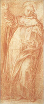
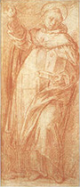

|  |
|---|
Textum Parmae 1865 editum
et automato translatum a Roberto Busa SJ in taenias magneticas
denuo recognovit Enrique Alarcón atque instruxit


|  |
|---|


[89312] Petrus de Alvernia, In De caelo continuatio, lib. 3 cap. 8 Deinde cum dicit utrum autem inquirit quot sunt secundum numerum, et qualia sunt secundum naturam. Et quoniam alii aliter opinabantur, narrat in isto tertio opiniones aliorum, et reprobat pauca determinando secundum intentionem suam: quot autem sint secundum veritatem, et qualia, magis determinate ostendet in libro de generatione. Primo ergo inquirit de numero ipsorum. Secundo cum dicit, quoniam autem neque infinita, ostendit qualia sunt, quoniam generabilia, et quomodo. Circa primum primo praemittit intentionem suam, et ordinem considerandi. Secundo cum dicit, nullus enim sic, prosequitur. In prima parte dicit, quod ostenso quod sunt elementa, consequens est considerare de numero quot sunt, utrum finita vel infinita; et si finita, quot secundum numerum: et primo considerandum erit, quod non sint infinita, sicut crediderunt quidam, puta Anaxagoras, Democritus et Leucippus. Inter quae primo considerandum erit, quod non sunt infinita, sicut dixerunt ponentes elementa esse homiomera, quemadmodum Anaxagoras, et sequentes ipsum. Deinde cum dicit nullus enim prosequitur: et primo opiniones ponentium elementa infinita. Secundo cum dicit, quoniam autem necesse, ponit opiniones ponentium elementum unum esse tantum. Adhuc in prima parte facit quod dictum est; secundo cum dicit, adhuc si unicuique, ponit rationem propriam ostendentem elementa finita esse. Circa primum primo improbat opinionem Anaxagorae, ponentis elementa homiomera esse. Secundo cum dicit: sed adhuc neque vel alteri, improbat opinionem Democriti et Leucippi ponentium corpora indivisibilia. Circa primum ponit rationes tres: secundam cum dicit: adhuc autem sic sumentes; tertiam cum dicit, adhuc si corpus. In prima parte dicit quod nullus supponentium sicut dignitatem corpora homiomera elementa esse, recte accipit naturam elementi. Ad sensum enim apparet multa corpora composita homiomera esse, et divisibilia esse in homiomera: sicut carnem et os et lignum et lapidem et hujusmodi: quae omnia composita esse probantur per segregationem aliorum ab ipsis, puta ignis, et terrae et intermediorum. Quoniam igitur nullum positorum ex corporibus est elementum, manifestum est quod homiomera corpora non sunt elementa: sed corpus ad quod alia resolvuntur inexistens actu vel virtute, indivisibile in alia corpora priora altera specie, sicut dictum est prius. Deinde cum dicit adhuc autem ponit secundam rationem, dicens, quod adhuc bene sumentes elementum ponendo ipsum homiomerum, non necesse habent ipsa facere infinita: omnes enim causae propriae earum et passionum possunt reddi sumendo ea finita, siquis velit sumere. Idem etiam fiet, si sumantur duo aut tria, aut quatuor, quemadmodum Empedocles conatur reddere causas omnium, ponendo quatuor, quamvis non possit. Quoniam etiam nec ponentes homiomera possunt omnia generare ex ipsis: facies enim ex faciebus non possunt generare, nec aliud figuratorum nullum, quorum pars non est ejusdem rationis toti. Manifestum est autem quod melius est facere finita principia quam infinita, et finita pauca et minima, si aequaliter possunt reddi causae omnium apparentium fiendorum: sicut in disciplinis faciunt finita et quam paucissima supponentes. Infinitum enim incognoscibile est, finitum autem cognoscibile, et tanto magis quanto unitati magis appropinquat. Omnes enim accipiunt finita aut secundum speciem, puta quando punctum et lineam et planum definiunt, quorum unumquodque finitum est secundum speciem; aut secundum quantitatem quia finita numero accipiunt. Vel potest exponi finitum secundum speciem de infinito secundum formam; et finitum secundum quantitatem, de finito secundum numerum aut extensionem: his enim duobus modis dicitur aliquid finitum vel infinitum, ut potest apparere ex quinto metaphysicae, ubi distinguitur finis. Deinde cum dicit adhuc si ponit tertiam rationem, dicens, quod si corpus determinatur et distinguitur ab alio corpore per proprias differentias, corporum autem differentiae primae infinitae sunt, quia differentiae ipsorum sunt qualitates sensibiles primae, quas esse finitas probabitur in libro de generatione. Quare manifestum est quod corpora prima necesse est esse finita: ergo et elementa corporea: non sunt igitur infinita, sicut Anaxagoras posuit. Et est intelligendum, quod Anaxagoras videtur posuisse duplex esse rerum. Unum quidem intellectuale, et unicum in intellectu primo, in quo res omnes unum erant propter intellectualem unionem. Aliud autem reale et sensibile extra ipsum intellectum, secundum quod procedunt in esse ab intellectu conditivo, et sic diversitatem habent ad seinvicem: et si sic intellexit, non multum a veritate deviavit. Deinde cum dicit sed adhuc reprobat opinionem Leucippi et Democriti de infinitate elementorum; quam primo ponit: secundo cum dicit, primum quidem igitur, improbat. Primo igitur dicit, quod adhuc elementa prima corporum non sunt infinita, sicut alteri quidam dicunt, scilicet Leucippus et Democritus Abderites, idest excludentes multa accidentia rationabilia. Dicunt enim primas magnitudines, quas dicunt prima elementa corporum, esse infinitas secundum multitudinem, indivisibiles autem secundum magnitudinem. Et ideo ex uno vere non fieri multa, quia vere unum omnino non dividitur: nec ex multis fieri vere unum, quia sunt intransmutabilia, sed alia fieri ex ipsis tantum secundum aggregationem quandam et circumplexionem secundum figuram et ordinem et positionem. Isti autem aliquo modo omnia entia faciunt numeros, aut unitates quasdam ex quibus est numerus. Omnia enim entia vel sunt magnitudines indivisibiles, quae sunt elementa, quae proportionantur unitatibus propter indivisibilitatem, aut congregata ex eis salvatis quae proportionantur numeris per aggregationem salvatorum. Quamvis enim hoc expresse non dicant, realiter tamen dicunt. Et iterum, quoniam corpora prima determinantur figuris, et figurae autem in infinitum procedunt, sicut et numeri, corpora prima et simplicia infinita dixerunt: quae autem et qualis sit natura elementorum non determinaverunt, nisi solum in igne, cui attribuerunt figuram pyramidalem; aerem autem et aquam et alia dixerunt generari ex primis magnitudinibus recipientibus, ut contingit figura ipsorum, et differre ab invicem magnitudine et parvitate, ac si natura magnitudinis et parvitatis sit pansperma, idest totum seminarium elementorum omnium et generatorum ex eis. Deinde cum dicit primum quidem improbat praedictam opinionem. Et primo ex hoc quod falsum posuit; secundo cum dicit: simul autem et contraria; ex hoc quod ponentes ea contraria sibi ponunt. Circa primum ponit rationes tres quae positae sunt prius. Ponens igitur primam, dicit, quod primum peccatum, quod accidit ponentibus sic, est quod non principia finita sumunt, cum causae et principia apparentium aequaliter reddantur positis finitis sicut infinitis, sicut expositum fuit prius. Secundam rationem ponit dicens, quod adhuc si differentiae elementorum non sunt infinitae, manifestum est, quod nec elementa infinita erunt: numerus enim ipsorum secundum speciem est secundum numerum differentiarum; differentiae autem elementorum non sunt infinitae, quia sunt qualitates sensibiles primae vel per se principia ipsarum; ergo elementa infinita non erunt. Tertiam ponit dicens, quod ponentes indivisibilia corpora necessario habent ponere quaedam contraria suppositionibus scientiarum mathematicarum, et multa principiorum suorum apparentium ad sensum negare: puta hoc ipsum quod dicunt, omne continuum divisibile esse in infinitum, et indivisibile divisibili non esse continuum, nec consequenter ens: de quibus dictum est prius in his quae de tempore et motu, et in libro physicorum quinto et sexto. Deinde cum dicit simul autem improbat eam eo quod ista ponentes necessario habent sibi contradicere: et circa hoc ponit rationes duas: secundam cum dicit: adhuc neque secundum horum et cetera. Primo dicit, quod simul cum praedictis ponentes hanc opinionem necesse habent sibiipsis contradicere. Ponunt enim corpora mundi indivisibilia esse elementa, et aerem, terram et aquam, differre solum magnitudine et parvitate, quia terra est ex majoribus indivisibilibus, aqua ex minoribus, et aer adhuc ex minoribus: hoc etiam ponunt, quod terra et aqua et aer ex invicem generantur. Si enim elementa sunt indivisibilia, ex quibus componuntur, non different magnitudine et parvitate: si enim magnitudine et parvitate differrent, scilicet quod aer ex minoribus generaretur quam aqua, et aqua quam terra, non esset possibile quod fierent ex invicem semper. Si enim aer generetur ex aqua, hoc erit per segregationem minorum atomorum: cum autem non sint infinitae in aqua finita existente, manifestum est, quod per continuam generationem segregabuntur omnino et remanebunt majora corpora indivisibilia solum, quare ex aqua non ulterius generabitur aer; similiter nec aqua ex terra, nec terra ex illis: sed ipsi dicunt, aquam et aerem semper ex invicem generari: ergo non differunt solum magnitudine et parvitate, cujus contrarium ponunt. Deinde cum dicit adhuc neque ponit secundam dicens, quod adhuc secundum opinionem quamdam istorum, quam habent de corporibus primis, sequitur ipsa non esse infinita multitudine: cujus contrarium ponunt: dicunt enim quod corpora determinantur et differunt ab invicem figuris: figurae autem omnes componuntur ex pyramidibus, et resolvuntur in eas: sicut enim figurae superficiales et rectilineae resolvuntur in triangulum, ita figurae solidae rectilineae in pyramides. Sphaera autem componitur ex octo partibus pyramidalibus: quod apparet si imaginetur sphaera dividi secundum tres circulos magnos intersecantes se ad angulos rectos. Dividitur enim in octo pyramides, quarum coni recti anguli erunt in centro sphaerae: quare trianguli erunt prima elementa figurarum: sunt autem finiti, quare necesse est principia seu elementa figurarum finita esse. Cum igitur numerus elementorum sit secundum numerum differentiarum primarum, necesse est esse tot corpora simplicia quot sunt prima elementa figurarum, sive sint unum, sive duo, sive tria, vel alio quocumque numero. Deinde cum dicit adhuc autem ponit rationem propriam et naturalem ostendentem elementa finita esse, quam posuit circa principium primi libri, dicens, uniuscujusque elementorum est aliquis motus proprius, et motus corporis simplicis est simplex et compositus: ergo secundum multitudinem motuum simplicium erit multitudo simplicium corporum; motus autem simplices infiniti non sunt, quia latitudines simplices non sunt plures duabus, scilicet recta et circularis, nec etiam loca in quibus sunt infinita sunt: corpora igitur simplicia non sunt infinita; erunt igitur finita.
[89313] Petrus de Alvernia, In De caelo continuatio, lib. 3 cap. 9 Postquam Aristoteles ostendit elementa non esse infinita, ostendit ea non esse unum tantum, reprobando opiniones ponentium contrarium. Circa quod primo praemittit intentionem suam, dicens, quoniam elementa necesse est finita esse, ut apparet ex dictis: finita autem sunt, sive unum sive plura: propter quod restat considerandum, utrum sint plura vel unum. Deinde cum dicit quidam enim prosequitur: et primo ponit opiniones ponentium unum tantum; secundo cum dicit, quicumque quidem igitur, improbat eas. In prima parte dicit, quod quidam antiquorum posuerunt unum solum elementum corporum: sed istud alii dixerunt aquam, sicut Thales Milesius et Hippon, quia spermata animalium et alimenta ipsorum et plantarum videbant esse humida: alii autem aerem, sicut Anaximenes et Diogenes, quia videbant ipsum facile alterabilem ad quodcumque. Alii autem aliquid medium inter ista, subtilius aqua et grossius aere, quod posuerunt esse infinitum et continere omnes caelos et omnia corpora universaliter, sicut Anaximander. Alii autem ignem, sicut Hyppasus Metapontinus et Heraclitus Ephesius, quia videbant ipsum maxime inter alia activum. Deinde cum dicit quicumque quidem reprobat opiniones praedictas: et primo divisim: secundo autem cum dicit, commune autem; communiter per unam communem rationem. Circa primum improbat opinionem ponentium aerem vel aquam vel aliquod medium primum elementum; secundo cum dicit, quicumque quidem ignem, opinionem ponentium ignem. Circa primum ponit rationes duas; secundam cum dicit: adhuc autem spissitudine. In prima parte dicit, quod quicumque elementum primum et unum dicunt esse aerem, vel aquam, vel aliquod medium subtilius aqua et grossius aere, dicentes alia generari ex hoc uno per ingrossationem vel rarefactionem, grossiora quidem per inspissationem, subtiliora autem per rarefactionem, decipiunt ipsi seipsos; de necessitate enim ponunt aliquid esse prius elemento primo. Est enim quaedam generatio aliorum ex elementis, quam dicunt compositionem. Alia autem elementorum ex compositis, quam dicunt resolutionem, quae fit per rarefactionem: rarefactio autem est ad id quod est subtilius et prius natura; quare manifestum est quod corpus quod est subtiliorum partium est prius secundum naturam his quae grossiorum. Ignem autem dicunt esse subtilissimum omnium corporum: quare ignis erit primum natura omnium. Sic igitur aqua vel aer vel aliquod medium elementum primum erit prius elemento primo: quod est impossibile. Non differt autem, si ignis non sit primum nec subtilius secundum ipsos; si enim ipse non sit, erit aliud quodcumque sit, vel ex quo aliquod medium ponunt, ex quo dicunt alia quaedam generari per rarefactionem. Deinde cum dicit adhuc autem ponit secundam rationem primo. Secundo cum dicit, quod accidit plura dicentibus, extendit eam contra ponentes elementa determinari magnitudine et parvitate. Primo igitur dicit, quod elementa generari ex uno per rarefactionem et condensationem, idem est quod generari ea per subtilationem et ingrossationem: subtile enim secundum se est rarum aliquod; grossum autem omnes dicunt esse spissum; subtilitas autem et grossities sunt idem quod magnitudo et parvitas; subtile enim dicimus, quod est parvarum partium; quod enim multum extensum est per rarefactionem subtile est; tale autem est quod componitur ex corporibus parvis. Grossum autem est quod est magnarum partium. Si igitur dicentes alia generari ex uno elemento per rarefactionem et condensationem, determinant substantiam aliorum magnitudine et parvitate. Sic autem determinata substantia eorum, omnia alia ad aliquid dicentur, et non simpliciter. Et non erit aliquis ignis vel aer vel aqua simpliciter: sed ad hoc ignis, ad aliud autem aer vel aqua: magnum enim et parvum ad aliquid dicuntur, sicut dicitur in praedicamentis. Hoc autem est impossibile; ergo et primum. Deinde cum dicit quod accidit extendit rationem istam ad ponentes elementa plura determinari magnitudine et parvitate; dicens, quod idem inconveniens accidit ponentibus elementa determinari et differre invicem magnitudine et parvitate. Si enim elementa determinantur magnitudine et parvitate, magnitudines ipsorum in aliqua ratione erunt, ita ut quae est proportio magnitudinis ignis ad magnitudinem aeris, eadem sit magnitudinis aeris ad eam quae aquae, et hujus ad eam quae terrae. Si igitur propter hujusmodi rationem magnitudinum et excessuum solum determinantur ignis et aer et aqua et terra, erit aer ad unum, puta ad ignem, et ignis ad aquam, et ignis et aer ad aquam, et aqua ad aerem, aer ad terram: quia illa eadem ratione magnitudinis et excessus, quo ignis excedit aerem determinatum, excedit aer aquam, et aqua terram: quia si ignis respectu aquae excedit aerem, per illa eadem erit ignis ad aquam, et sic in aliis. Et iterum, quia magnitudo ignis continet magnitudinem aeris et aquae et terrae, per quas determinatur, erit ignis et aer et aqua et terra, similiter in aliis. Et iterum quia terra tota eamdem rationem habet ad aliquam partem sui secundum magnitudinem quam habet ignis ad aerem, secundum illam et eamdem ad aliam quam aer ad aquam et eamdem ad aliam, quam aqua ad terram; sequitur, quod terra ad aliquam partem sui ignis et ad aliam aer, et ad aliam aqua, et similiter in aliis; sunt enim magnitudines minores in majoribus: quod est impossibile; sic igitur videtur exposuisse Alexander rationem istam. Simplicius autem dicit hanc expositionem extortam esse. Non enim oportet, si magnum et parvum ad aliquid dicantur, quod ea, quibus insunt, ad aliquid dicantur. Quamvis enim amicus sit ad aliquid, tamen homo, cui inest amicum esse, non est ad aliquid: similiter quamvis dualitas tantum excedat unitatem quantum exceditur a ternario, non tamen dualitas est unitas ad ternarium; et similiter non oportet quod quamvis aer tantum excedat aquam quantum exceditur ab igne, quod et aer sit ignis ad aquam, vel aqua aer ad ignem. Sed si magnitudo et parvitas, quae ad aliquid dicuntur, essent accidentia corporibus primis sicut amicum esse accidit homini; vel dualitati accidit excedit a ternario in determinata ratione: bene argueret Simplicius contra Alexandrum quod sicut non oportet, quod, si amicus ad aliquid dicitur, quod homo, cui inest, ad aliquid dicatur. Et sicut non oportet quod, si quantum dualitas excedit unitatem, tantum excedatur a ternario, quod propter hoc si unitas ad ternarium: ita non oportet quod si quantum aer exceditur ab igne in magnitudine, tantum excedat aquam, si ignis ad aquam. Si vero essent formae et naturae substantiales ipsorum, quibus determinantur, sicut isti ponebant, de necessitate sequeretur dictum Alexandri: sicut, si homo determinaretur per amicum esse, diceretur ad aliquid, sicut et amicus. Et si dualitas determinaretur per excedi in tantum a ternario quantum excedit unitatem, esset unitas ad ternarium. Et ideo quia elementa ponunt isti determinari per magnitudinem et parvitatem secundum se ad aliquid dictas, sequitur elementa ad aliquid dici, sicut posuit Alexander. Deinde cum dicit quicumque autem reprobat opinionem illorum, qui posuerunt ignem esse illud unum elementum; et primo exponit opinionem illorum: et diversitatem circa ipsam tangit; secundo cum dicit: utriusque autem eadem improbat eam. In prima parte ostendit quod omnes ponentes ignem esse elementum primum, solum quaedam praedictorum inconvenientium diffugiunt; non enim necesse habent ponere aliquid simplicius elemento. Sed de necessitate quaedam alia incurrunt: quod apparebit positis opinionibus. Quidam enim attribuunt ei figuram pyramidalem: et istorum, quidam dicunt simplicius, hoc est minus secundum rationem, arguentes sic: figura pyramidalis est acutissima figurarum et simplicissima; inter corpora autem ignis acutissimum est et simplicissimum: quare ignis est pyramidalis figurae: arguentes ex affirmativis in secunda figura. Et, si arguatur, quod eodem modo arguendi utitur philosophus in secundo hujus ad probandum caelum esse circularis figurae: quare si ibi valet, et hic, et si ibi non valet, nec hic: dicendum ad hoc quod non est simile: quia corpus caeleste secundum se figuratum est, et ideo cum sit primum, sibi debetur prima figura secundum se. Et ideo ibi convertuntur termini majoris propositionis; si enim corpori primo debetur prima figura, e converso verum erit dicere quod figuratum prima figura est corpus primum caeleste. In talibus autem gratia materiae tenet syllogismus ex affirmativis in secunda figura, quia per conversionem majoris fit in prima. Hic autem elementis primis corporum sensibilium non debetur figura secundum se, sicut consequens formam eorum; omnia enim unam figuram sequuntur, scilicet continentis; et ideo non oportet quod aliquod primum inter ea habeat aliquam primam figuram. Et ideo hic non convertuntur termini majoris propositionis, propter quod non valet ratio. Alii etiam rationabilius arguunt supponentes tria: primum scilicet quod corpora primo componuntur ex subtilissimo et simplicissimo; secundum, quod figurae solidae omnes componuntur ex pyramidibus; pyramis enim est prima omnium figurarum solidarum rectilinearum; tertium quod posterius ponunt, quod prima figura debetur primo corpori. Ex quibus syllogizant sic, quod primum et subtilissimum corporum est ignis, quod etiam supponunt ut manifestum: subtilissimum autem corporum et primum figuratur prima figura: ergo igni debetur prima figura: ignis igitur est pyramidalis figurae. Alii autem de figura ignis nihil dicunt, sed ponentes ipsum elementum primum ponunt ipsum esse ex subtilissimis partibus, et deinde per commassationem quamdam alia fieri, quemadmodum ex inflata, idest extensa substantia fiunt per commassationem parva decisione, idest parva secundum quantitatem, sicut ex auri folio extenso per commassationem fit aurum spissius. Sic ex igne subtili existente coeunte et inspissato fiunt grossiora corpora non per commistionem. Deinde cum dicit utriusque autem improbat praedictam opinionem. Hujusmodi autem ponentium ignem elementum primum, quidam posuerunt ipsum indivisibile secundum quantitatem; alii autem divisibile. Primo igitur probat, quod indivisibile existens non potest esse elementum primum. Secundo cum dicit, si autem divisibile, quod etiam nec si sit divisibile. Circa primum adducit rationes duas. Secundam ponit cum dicit: adhuc non contingit. In prima parte dicit, quod utrisque ponentibus ignem elementum primum, scilicet figurantibus et non figurantibus, eadem accidunt fere inconvenientia. Si enim ponunt ipsum indivisibile, incurrunt inconvenientia tacta prius contra Democritum et Leucippum, scilicet quod quantum et continuum in infinitum divisibile non est; et quod indivisibile divisibili continuabitur: quorum contraria supponuntur in disciplinis mathematicis. Deinde cum dicit adhuc non ponit secundam rationem, dicens, quod adhuc volentibus considerare naturaliter, non contingit ignem indivisibilem existentem esse elementum primum, nec elementa corporea esse indivisibilia: elementa enim partes corporum sunt corpora, et omne corpus omni corpori secundum magnitudinem est comparabile, cum nullum sit infinitum; ergo omnia homiomera ad invicem comparabilia erunt secundum quantitates: puta aqua ad totum aerem, et totum elementum terrae ad totum elementum aquae, et similiter aer totus respectu ignis. Manifestum est autem quod ignis totus majoris quantitatis est quam aer, et aer quam aqua, et aqua quam terra, et e contrario aer minoris quam ignis, et aqua quam aer, et terra quam aqua. Si igitur in eo quod est majus alio secundum quantitatem est magnitudo aequalis minori: omne enim quod majus est aliquo dividitur in id quod excedit, et in aliud quo exceditur, elementum autem aquae majus est elemento terrae, ut dictum est: quare elementum aquae divisibile erit. Similiter autem ignis, et universaliter omne, quod subtilius est alio: non potest igitur aliquid esse primum elementum corporum et indivisibile. Deinde cum dicit si autem patet quod nec ignis potest esse elementum primum, posito quod sit divisibilis. Et dividitur in partes duas: quia primo ostendit, quod si ignis sit divisibilis, et sit determinatus figura, non potest esse elementum primum. Secundo cum dicit, magnitudine autem, quod nec etiam si non determinetur figura. Quantum ad primum adducit rationes duas; dicens primo quod, si ignis sit elementum primum et divisibile, et determinatum figura pyramidali, sequetur quod pars ignis non erit ignis, quia pars pyramidis universaliter non est pyramis: nunc autem hoc est inconveniens, partem enim ignis ignem esse dicimus: ergo et primum est inconveniens. Secundam rationem ponit dicens, quod adhuc, si ignis indivisibilis existens et pyramide determinatus sit elementum, sequetur quod non omne corpus erit elementum aut ex elementis: pars enim ignis corpus quoddam est, et non est elementum quod est ignis, quia non habet figuram pyramidis: nec etiam composita ex elementis: elementum enim simplicius est eo quod componitur ex elemento: nihil autem simplicius est secundum eos parte ignis: pars igitur ignis nec elementum erit, nec ex elementis: hoc autem inconveniens est, ergo et primum. Deinde cum dicit magnitudine autem ostendit quod, si ignis est divisibilis, et, non determinetur figura, non est elementum primum: et ad hoc adducit rationes duas: dicens primo, quod dicentibus ignem determinari magnitudine, sed non figura, etiam cum hoc esset elementum primum, accidit quod aliquid sit prius elemento primo, et hoc in infinitum ire. Si enim omne corpus divisibile est, ignis magnitudinem habens divisibilis erit in infinitum: quare ante quamlibet partem ignis erit ponere in infinitum partem priorem ignis, elemento primo erit aliquid prius etiam in infinitum: hoc autem impossibile est: ergo et primum. Secundam rationem ponit dicens: adhuc autem. His, qui dicunt ignem esse elementum primum et determinari magnitudine, non figura, idem accidit de necessitate dicere, cum magnitudo ad aliquid dicatur secundum quod hujusmodi, quod ignis ad aliquid dicatur, sicut et alia corpora; et quod aliquid sit ignis ad hoc, aer autem ad aliud, similiter et aer et aqua et terra: hoc autem inconveniens est: ergo et primum. Deinde cum dicit commune autem ponit rationem communem contra omnes ponentes elementum unum, dicens, quod commune peccatum contra omnes ponentes elementum unum, est quod omnes necesse habent ponere unum solum motum naturalem, et omnium corporum unum et eumdem: omnia enim illo motu moventur naturaliter, quo movetur elementum, ex quo consistentiam habent. Si igitur cujuslibet corporis naturalis est aliquis motus naturalis, et omnia corpora sunt aliquod corpus unum primum, ex quo consistunt, secundum ipsos sequitur, quod omnium erit motus unus, et illo uno movebitur aliquid tanto velocius alio, quanto ex pluribus partibus compositum erit; sicut ignis quanto quidem major est, tanto velocius fertur sursum secundum motum naturalem ejus: quare, si omnia essent ignis, moverentur sursum, quaedam velocius, quaedam tardius: nunc autem videmus multa deorsum ferri velociter. Manifestum est igitur quod non omnium est unum elementum primum. Adhuc quoniam determinatum est prius quod plures sunt motus naturales et simplices, ut ad sensum apparet, scilicet a medio et ad medium, et motus simplices sunt simplicium corporum: manifestum est quod sunt plura corpora simplicia.
[89314] Petrus de Alvernia, In De caelo continuatio, lib. 3 cap. 10 Postquam philosophus ostendit quod elementa non sunt infinita, nec etiam unum tantum, intendit hic determinare qualia sunt, quoniam non sempiterna, sed generabilia, et quomodo. Et circa hoc primo praemittit intentionem suam. Secundo cum dicit sempiterna quidem, prosequitur. In prima parte dicit, quod quoniam ex his quae dicta sunt, manifestum est quod elementa non possibile est esse infinita, nec unum tantum, sed necesse est esse plura et finita; considerandum restat primo, utrum sint sempiterna, aut generabilia. Hoc enim declarato, manifestum erit qualia sunt, quoniam calida, frigida, humida, et sicca: per hoc enim moventur ad generationem: et etiam quot sunt secundum numerum conjugationum possibilium qualitatem dictarum. Deinde cum dicit sempiterna quidem prosequitur: et primo ostendit quod non sunt sempiterna, sed generabilia. Secundo cum dicit quoniam autem generabilia, inquirit quomodo sunt generabilia. Circa primum primo praemittit quamdam divisionem ex qua apparet intentum. Secundo cum dicit si quidem igitur infinita prosequitur membra. Primo modo igitur dicit quod elementa prima corporea impossibile est esse sempiterna. Ad sensum enim videmus ignem et aquam et unumquodque de numero simplicium corporum inter quae sunt elementa prima, resolvi et corrumpi. Necessarium igitur est hujusmodi resolutionem aut infinitam esse et nunquam terminari, aut stare et terminari quandoque. Deinde cum dicit siquidem igitur prosequitur: et primo primum membrum, ostendens quod dissolutio ipsorum non est infinita primo. Secundo cum dicit si autem stabit secundo. Tertio cum dicit itaque necesse concludit ipsa non esse aeterna simpliciter. In prima parte dicit quod si resolutio quae apparet in simplicibus corporibus est infinita, cum tempus resolutionis coextendatur ipsi, tempus resolutionis erit infinitum: et si tempus resolutionis infinitum est, manifestum est quod et tempus compositionis: si tempus corruptionis est aequale tempori generationis, sicut dicitur secundo de generatione. Tempus autem compositionis est majus, quia laboriosior est compositio. Quare cum extra dissolutionem sit compositio, et prior; sequitur quod extra infinitum tempus dissolutionis erit aliud tempus infinitum, quod est compositionis, et adhuc prius illo compositio prior est dissolutione: quare extra infinitum erit aliud infinitum. Hoc autem est impossibile, cum unum totum comprehendat: ergo et primum est impossibile. Et est intelligendum, quod non est impossibile duo infinita esse, quorum utrumque sit infinitum in altera extremitate, finitum autem in altera. Sic enim se habent tempus praeteritum et futurum copulata ad instans nunc, quorum praeteritum est infinitum ad ante, et finitum ad posterius, puta ad nunc futurum, aut e converso, secundum Aristotelem: duo autem infinita esse secundum utramque extremitatem est impossibile. Et sic procedit ratio Aristotelis. Deinde cum dicit si autem prosequitur secundum membrum; dicens, quod si solutio apparens in corporibus primis non est infinita, sed cum stat necesse est stare eam; aut erit aliquod corpus indivisibile omnino et incorruptibile, aut aliquod divisibile et incorruptibile, quod tamen nunquam dividetur aut corrumpetur, sicut Empedocles ponit, qui posuit elementa divisibilia, non tamen corrumpi, quia nec habere materiam. Non autem potest stare ad aliquod corpus indivisibile, quia non potest esse aliquid tale: sicut probant rationes adductae prius contra Democritum et Platonem. Nec etiam potest stare ad divisibile quod nunquam dissolvatur aut corrumpatur. In omnibus enim quae sunt unius naturae, videmus quod minus facilius corrumpitur a majori, quia minoris virtutis est et magis passibile. Si igitur quod multum est, corruptibile est, ut ita corrumpatur in aliquo tempore: magis rationale est minus divisibile et corruptibile corrumpi in minori: et quamvis non corrumpatur a contrario secundum formam, tamen ab excellenti corrumpetur: his enim duobus modis videmus ignem et alia corpora corrumpi. Quandoque quidem a contrario majoris virtutis existente extrinseco: alio modo marcescendo in seipsis, propter defectum materiae vel alimenti. Et hoc modo minus corrumpitur a majori ut minor flamma a magna: et tanto velocius quanto minus fuerit. Majus enim minus et alimentum ejus in pauco tempore consumit. Deinde cum dicit itaque necesse concludit ipsa non esse aeterna, sed generabilia: dicens sic; igitur lex qua dissolvuntur, et non stat dissolutio ad aliquod divisibile vel indivisibile aeternum existens, relinquitur ipsa esse generabilia et corruptibilia. Deinde cum dicit quoniam autem inquiritur quomodo generabilia sunt. Et circa hoc primo ostendit quod sunt generabilia ex invicem. Secundo cum dicit: item igitur considerandum, inquirit quomodo ex invicem. Circa primum primo ponit quamdam divisionem. Quoniam corpora simplicia sunt generabilia, necesse est ea generari, aut ex non corpore omnino, aut ex corpore. Si ex corpore; cum ex se non possint: essent enim prius se ipsis: de necessitate generabuntur, vel ex alio corpore diverso ab ipsis, vel ex se invicem. Deinde cum dicit ex non corpore prosequitur membra: et primo excludit alterum membrum primae divisionis: secundo cum dicit sed adhuc neque ex corpore; alterum secundae; tertio cum dicit quoniam autem concludit alterum membrum secundae sicut verum. In prima parte dicit quod sermo, simplicia corpora generari ex non corpore, de necessitate facit vacuum separatum; cujus probatio est, quoniam omne quod fit, de necessitate est in aliquo loco; omnes enim motus in loco sunt, sicut dicitur in quinto physicorum. Necesse est igitur, quod locus in quo est illud corpus quod generatur, nunc sit prius sine corpore, aut contineat aliquod corpus. Si autem contineat aliquod corpus, sequitur, quod duo corpora erunt simul, scilicet quod generatur, et quod praeexistebat quod est impossibile. Non enim potest dici quod corpus praeexistens cedat; si enim cederet, in illo eodem in quo istud generatur oporteret ipsum cedere: hoc autem generatur in instanti; ergo in instanti cederet: quod est impossibile, quia cessio non fit nisi per motum localem, qui non est in instanti. Si autem sit sine corpore, cum posterius recipiat corpus, necesse est esse vacuum separatum: vacuum enim dicimus quod est privatum corpore sensibili, et natum est recipere illud. Hoc autem est impossibile, sicut dicitur in quarto physicorum: ergo et primum. Et est intelligendum quod litera illa quae dicit omne enim quod fit aut sine corpore erit, in quo fit generatio, aut habebit corpus: obscura est propter defectum alicujus, sicut videtur Alexandro. Suppletur autem sic: omne enim quod fit, in aliquo fit, aut sine corpore erit in quo generatio est, aut habebit corpus: et tunc est plana secundum expositionem dictam. Deinde cum dicit sed adhuc excludit secundum membrum secundae divisionis: dicens, quod adhuc si corpora simplicia generentur ex alio corpore; cum illud sit prius, erit aliquid prius elementis: quod quidem inconveniens est in quo posset stare. Sed deducit ad aliud manifestius, dicens, quod hujusmodi corpus ex quo generantur elementa aut habebit gravitatem aut levitatem, aut non; si habeat gravitatem aut levitatem, erit ergo aliquod elementorum primorum; non ergo aliud, quod est contra hypothesim. Si autem non habeat gravitatem aut levitatem, immobile erit, sicut probatum est prius, et quia abstractum a motu erit, sicut mathematicum: tale autem existens non erit in loco naturali. Si enim quiesceret in aliquo loco, moveretur ad ipsum. Si quidem per violentiam, moveretur per violentiam ad ipsum. Si autem per naturam quiesceret, moveretur ad ipsum per naturam. Si autem dicatur proterviendo, quod in aliquo loco determinato est, tunc aliquod elementorum determinatorum erit; non ergo aliud. Si autem dicatur quod omnino in loco non est, nihil fieret ex ipso; quia quod generatur et illud ex quo generatur, necesse est simul esse: quia causa in actu et effectus in actu sunt simul. Sic igitur non generantur elementa ex aliquo corpore priori. Deinde cum dicit quoniam autem concludit alterum; dicens, quod, si corpora simplicia non generantur ex non corpore, nec etiam ex alio corpore priori, sicut probatum est, nec aliquod ex seipso generari potest, ut ex se manifestum est; relinquitur quod generantur ex se invicem mutuo.
[89315] Petrus de Alvernia, In De caelo continuatio, lib. 3 cap. 11 Postquam philosophus declaravit, quod elementa generantur ex seinvicem; hic inquirit quomodo, et quis modus sit generationis ipsorum ex invicem. Et primo praemittit intentionem suam. Secundo cum dicit qui quidem igitur, prosequitur. In prima igitur parte dicit, quod quia corpora simplicia ex invicem generantur, iterum restat considerandum, quis sit modus generationis ipsorum ex invicem; et, quia diversimode sunt opinati diversi, inquirendum est, utrum ex invicem generentur per segregationem partium inexistentium, sicut Anaxagoras et Empedocles et Democritus dixerunt, aut per resolutionem in figuras primas, sicut Plato et quidam alii dixerunt: aut si est aliquis alius modus transmutationis in invicem eorum. Deinde cum dicit qui quidem prosequitur. Et primo ostendit quod non generantur ex invicem per segregationem, sicut primi dixerunt. Secundo cum dicit relinquitur quod non per transfigurationem, improbat alteram opinionem. Quis autem sit verus modus generationis eorum ex invicem, apparebit ex libro de generatione. Circa primum adducit rationes quatuor. Secundam ponit cum dicit deinde. Tertiam, ibi, adhuc autem mistorum. Quartam, ibi, necesse autem. Circa primum est intelligendum, quod Empedocles posuit quatuor corpora prima, ignem, aerem, aquam et terram, intransmutabilia secundum substantiam; divisibilia tamen secundum quantitatem, et divisa in partes parvas per congregationem hujusmodi partium, secundum plus et minus, constituere illud quod dicimus ignem, aerem, aquam et terram. Nihil enim vincere posuit talia, et ex illis per segregationem posuit generari ea quae diximus mista. Democritus autem posuit corpora prima indivisibilia, et ex ipsis per congregationem quamdam in primo generari quod dicimus ignem, aerem, aquam et terram, ex istis per segregationem fieri ea quae dicimus mista. Anaxagoras vero principia prima entium posuit partes homogeneas infinitas existentes in unoquoque, et deinde per segregationem alia generari. Istae autem opiniones hoc habent commune, quod dicunt corpora generari per segregationem existentium. Et contra hoc Aristoteles sic dicit, quod illi qui circa Empedoclem, Anaxagoram et Democritum fuerunt, decipiunt seipsos: dicentes enim corpora ex seinvicem generari per segregationem, non ponunt generationem fieri secundum veritatem, sed secundum apparentiam tantum: generatio enim secundum veritatem est per acquisitionem esse simpliciter in actu, existente in potentia per transmutationem. Ipsi autem hoc non ponunt, ponentes generationem fieri per segregationem inexistentium prius, ac si aliquid existens in vase per segregationem ex illo generaretur et non per transmutationem ex ente in potentia. Haec autem generatio non est secundum veritatem, sed secundum apparentiam. Est enim deductio inexistentis de occulto in manifestum; generatio autem secundum veritatem est acquisitio esse simpliciter per transmutationem: male ergo posuerunt. Deinde cum dicit deinde et sic ponit secundam rationem, dicens, quod post haec, dato quod generatio sit per segregationem, nihilominus accidunt quaedam inconvenientia: quod declarat primo accipiendo sicut manifestum ex se, eadem magnitudo vel idem corpus per congregationem vel commassationem per se non fit gravius; sicut vestimentum compressum non est gravius seipso expanso. Sed dicentibus aquam generari ex aere per segregationem accidit contrarium. Videmus enim omnem aquam segregatam ex ipso, graviorem esse quam esset totus aer, ex quo generatur; ergo generationem aquae fieri per solam segregationem inexistentium est impossibile. Si vero dicatur non esse inconveniens, quod generatur ex alio, esse gravius illo; aer enim ex igne generatus gravior est, similiter aqua ex aere et terra quam aqua: et iterum quandoque videmus quod generatum ex alio per commassationem velocius movetur deorsum: sicut aqua segregata ex vase lato velocius movetur secundum se accepta quam cum ipso vase: dicendum, quod est aliud generari ex alio per alterationem, et aliud per segregationem. Quod enim per alterationem generatur, praeexistit in potentia tantum, et ideo postquam generatum est in actu est gravius vel levius simpliciter, ut contingit. Quod autem per segregationem generatur solum, prius existebat in actu in eo ex quo generabatur. Inexistens autem et separatum non est majoris virtutis secundum quod hujusmodi: quare nec gravius nec levius: sic autem dicebant antiqui fieri generationem: et sic procedit Aristoteles contra eos. Objectio autem prima procedebat primo modo; nec oportet, quod si ex aliquo segregaretur aqua, quae movetur deorsum velocius quam id ex quo segregatur, quod sit gravior propter solam segregationem; contingit enim quandoque quod corpus, ex quo segregatur aqua, propter latitudinem figurae vel aliquid aliud supernatat; et quod segregatur, quia in minori quantitate segregatur velocius movetur non habens eamdem latitudinem; latitudo enim figurae aliquando supernatare facit, ut consequenter dicetur in quarto; et inde secunda objectio non procedit. Deinde cum dicit adhuc autem ponit tertiam rationem; accipiens primo sicut manifestum quod corpus admistum alii per congregationem et inexistens in actu, cum separatur, non obtinet majorem locum. Quorum enim est eadem forma et eadem virtus, omnino eorum est idem locus. Nunc autem videmus quod cum ex aqua fiat aer, quod majorem occupat locum: quia quod est subtilius ampliori indiget loco quam id quod est grossius. Iterum manifestum est hoc in alteratione quorumdam corporum. Musto enim rarefacto per caliditatem et spumefacto, quandoque rumpitur vas continens: sic enim subtiliatum quaerit majorem locum et non invenit. Similiter se habet in humidis vaporantibus et intumescentibus. Si autem simpliciter non est vacuum, sicut Empedocles et Anaxagoras posuerunt: et corpora quae fluunt ex aliis non extenduntur sicut ipsi ponunt: manifestum quod impossibile est humida vaporantia intumescere et rumpere vasa. Si autem est vacuum sicut posuit Democritus, et extenduntur corpora facta ex aliis, sequitur quod corpus inexistens alii actu per segregationem fiet amplius: quod est contra suppositionem acceptam, et praeter rationem: ergo corpora non generantur ex invicem per solam segregationem. Deinde cum dicit necesse autem ponit quartam rationem; dicens, quod si corpora generantur ex invicem per segregationem, necesse erit tandem deficere generationem eorum ex invicem. Quod probat per rationem quam contra Anaxagoram posuit in primo physicorum ubi inquirebat principia prima transmutationis corporum, accipiens principium quod et ibi accepit, quod in magnitudine finita non sunt quanta infinita aequalia secundum magnitudinem. Infinita enim quanta aequalia magnitudinem infinitam constituunt, quae non potest esse in magnitudine finita. Quare infinita aequalia in finita magnitudine non erunt, quamvis in infinitum una magnitudo sit divisibilis in partes inaequales et ejusdem proportionis. Si igitur ex terra generetur aqua, necessario segregabuntur aliquae partes finitae ex ea. Et iterum ex residua terra si adhuc insint aliquae partes, aqua generabitur, per segregationem aliquarum partium. Si igitur hoc procedat in infinitum, sequetur quod in terra existente finita erunt partes aquae infinitae secundum multitudinem. Hoc autem est impossibile: ergo aquam generari ex terra per segregationem solam est impossibile. Sic igitur est manifestum quod elementa ex seinvicem non generantur per solam segregationem. Deinde cum dicit relinquitur autem improbat secundam opinionem quae posuit elementa generari ex invicem secundum trasmutationem quamdam. Et primo praemittit diversitatem ipsius opinionis. Secundo cum dicit si quidem transfiguratione, prosequitur improbando. Primo dicit, quod ostenso quod elementa ex invicem non generantur per solam segregationem, relinquitur inquirendum, utrum generentur per transmutationem eorum adinvicem. Per transmutationem autem adinvicem potest intelligi ad praesens duobus modis: uno modo per transfigurationem; sicut si ex eadem cera nunc generetur sphaera et circulus, nunc pyramis. Alio modo per resolutionem corporis corrumpendi ad superficies primas, et generatione alterius ex illis, sicut quidam dicunt, ut Plato. Si enim sit alius modus generationis eorum ex invicem per transmutationem, apparebit in libro de generatione. Deinde cum dicit siquidem igitur improbat opiniones istas. Et primo primam. Secundo cum dicit si autem superficierum secundam. In prima dicit secundam: si corpora prima generentur ex invicem per transfigurationem, sequitur necessario quod erit ponere corpora indivisibilia. Si enim sint divisibilia, et determinentur per figuras, sicut ponunt quidam, sequetur quod pars ignis non erit ignis, neque pars terrae terra, quia pars pyramidis non est pyramis. Et sicut pars figurae se habet ad figuram, ita pars corporis ad corpus. Hoc autem est impossibile: ergo et primum. Et est advertendum, quod haec ratio procedit contra apparentiam verborum Platonis, non forte contra intentionem ejus: cum enim diceret quod elementa ex invicem generantur per transmutationem materiae eorum ex uno in aliud, adducit exemplum de auro quod transmutatur de una figura in aliam, non quod intelligeret quod transmutatio elementorum adinvicem esset sicut transmutatio auri a figura in figuram, quod gratia exempli adduxit. Exempla autem ponimus non ut ita sit, sed ut sentiat qui dicit. Sed ne aliquis crederet, quod Plato intenderet sicut sonant verba, arguit Aristoteles contra verba magis quam contra intentionem. Deinde cum dicit si autem reprobat secundam opinionem, quam posuit ex invicem corpora generari per resolutionem ad figuras. Et primo facit hoc; secundo cum dicit totaliter autem tentare ostendit quod corpora non determinantur figuris. Circa primum primo improbat opinionem quantum ad ea quae dixit de terra: secundo cum dicit sed adhuc quantum ad ea quae posuit de aliis tribus. Circa primum ponit rationes duas: secundam cum dicit: accidit autem ipsis. Circa primum est intelligendum, quod Plato inquirens in Timaeo principia generationis corporum dixit quod principium eorum quae generantur ut subjectum, est materia; ut ratio autem, formae species: propagines autem horum, scilicet materiae et formae, primo sunt terra et aqua, aer et ignis. Generationem autem ex materia sic posuit supponens, quod corpora resolvuntur ad superficies et determinantur per eas, non distinguens inter corpus simpliciter, et corpus de genere quantitatis de quo veritatem habet. Omnes autem superficies rectangulae quibus ponit determinari elementa, et quae ex eis sunt, resolvuntur in triangulos. Inter triangulos autem primi sunt qui habent unum angulum rectum: quia angulus rectus est prior quam acutus vel obtusus. Triangulorum autem habentium rectum angulum, unus est scalenon, qui habet majus latus duplum ad minus. Alius autem est qui dicitur isocheles, qui angulum rectum habet, et est quarta pars quadrati: et tales quatuor conjuncti constituunt tetragonum: et sex conjuncta secundum angulos, habentia autem angulos octo, constituunt cubum: qui est elementum terrae. Ex scalenon autem componitur pyramis quod est elementum ignis et octaedron, quod est elementum aeris, et icosaedron, quod est elementum aquae: pyramis enim ex quatuor isopleuris componitur, octaedron autem ex octo: icosaedron vero ex viginti. Et ideo tria elementa, scilicet aerem, ignem et aquam posuit ex una figura prima, scilicet ex scaleno, terram autem solam ex quadam alia, scilicet isochele, quarum altera ad alteram non reducitur; et ideo transmutatione, quae est per resolutionem ad figuras, non dixit ex terra alia generari, nec e contrario, quia non communicant in figuris primis. Sed est intelligendum, quod Plato, secundum quod apparet ex dictis, posuit omnium elementorum unam materiam primam, sicut Aristoteles: et per resolutionem ad istam omnia ex invicem fieri; materias autem propinquas, puta superficies, aliam posuit terrae, et aliam aliorum trium: sicut Aristoteles, aliam materiam propinquam dicit esse phlegmatis, et aliam cholerae, et sic per resolutionem ad istam non dixit terram ex aliis generari, nec e converso. Primam autem transmutationem ex invicem omittit Aristoteles, et arguit contra secundam, ne aliquis intelligat Platonem tantum intellexisse de ista. Dicit igitur, quod si elementa generentur ex invicem per resolutionem ad figuras primas, primum inconveniens quod sequitur est, quod non omnia invicem generabuntur, puta terra ex aliis, nec e converso: quod secundum hypotheses eorum necesse habent dicere. Et dicunt ponentes terram resolvi in isocheles, et alia tria in gradatos, quae ad se invicem non reducuntur, nec ad aliam figuram priorem. Hoc autem irrationabile est, quod scilicet unum solum, puta terra, non transmutetur in alia, et contra sensum: videmus enim omnia invicem transmutari. Ex quo accidit eis aliud inconveniens: quod loquentes de apparentibus et sensibilibus non dicunt convenientia ostensa illis: cujus causa est, quia non bene sumuntur principia prima, sed accipientes quasdam opiniones determinatas et praeter rationem, puta quod numeri sunt substantia entium et corpora determinantur superficiebus, vel aliquid hujusmodi, reducunt omnia in ista sicut in causas. Nunc autem oportet principia sensibilium esse sensibilia, et sempiternorum sempiterna, et corruptibilium corruptibilia: dico autem propinqua, quia remota oportet esse insensibilia et incorruptibilia. Et universaliter oportet principia propinqua esse homogenea principiatis recte supponentibus. Hi vero propter amorem hujusmodi principiorum corruptorum, tamquam nutriti in eis, assimilantur his qui in disputationibus positiones falsas servant. Isti enim omnia consequentia positionibus illis sustinent, sicut principiis positis, ac si vera essent, inconveniens aliqua dividere ex aliquibus posterioribus accidentibus, et maxime ex fine ad quem oportet respicere sicut ad principium primum: est enim prima causarum. Sicut autem finis scientiae factivae est operatio vel operatum, et textrinae vestimentum, ex quo alia judicantur: ita finis scientiae naturalis est veritas et certitudo in apparentibus secundum sensum: sicut finis speculativae simpliciter est veritas simpliciter. Et ideo oportet in naturalibus judicare ex his quae apparent ad sensum. Quare cum praedicta sint contra sensum, scilicet non omnia ex invicem generari, sed quaedam sic, et quaedam non: manifestum est quod irrationabilia erunt. Deinde cum dicit accidit autem ponit secundam rationem; dicens, quod si ex terra alia non generantur, sequitur quod terra maxime erit elementum, et magis incorruptibilis. Si enim resolvatur ad superficies aliquas primas, ex quibus non fiant alia corpora, manifestum est quod incorruptibilis erit, saltem in alia corpora. Quod autem incorruptibile est, magis habet naturam elementi primi: quare terra maxime elementum erit et incorruptibilis. Hoc autem est inconveniens: ergo et primum. Et est intelligendum quod, cum terra sit unum principium proximum secundum Platonem, et aliud remotum: et primum, sicut materia prima; et secundum, sicut superficies, in quam contingit eam resolvi, et ex quibus generari: si loquamur de resolutione ejus simpliciter in materiam primam, sic ex ipsa generantur alia, et e converso, ut ad sensum apparet. Et hanc resolutionem omittit Aristoteles, in istis duabus rationibus. Si autem loquamur de resolutione quae est in figuras primas: quia prima figura, in quam terra resolvitur, et prima, in quam resolvuntur alia tria, sunt diversae, nec reducuntur ad invicem, nec ad aliquam primam: sic posuit Plato ex terra non fieri alia, nec e converso, sicut phlegma non fit ex cholera, nisi per reductionem ad materiam priorem. Aristoteles autem in istis duabus rationibus arguit ac si solum ultimam posuisset, ne aliqui intelligant non solum ipsum exclusisse. Deinde cum dicit sed adhuc improbat opinionem praedictam quantum ad ea quae dixit de aliis tribus, igne et aere et aqua. Et dividitur in partes tres: secundum quod tres rationes adducit. Secundam, cum dicit adhuc autem necesse. Tertiam cum dicit adhuc autem necesse non omne. In prima parte dicit, quod adhuc ponentibus ignem, aerem, et aquam generari ex invicem per resolutionem ad triangulos, irrationalis est praetermissio triangulorum quorumdam, quae accidit in eis in transmutatione hujusmodi elementorum ad invicem, quia hujusmodi corpora non componuntur ex aequalibus secundum numerum. Si enim aqua est ex viginti trigonis, aer autem ex octo, ut ipsi ponunt, si ex aliqua aqua tanta per dissolutionem generetur aer aequalis, ipsa resoluta in viginti triangulos generabuntur duae partes aeris aequales: quarum quaelibet erit ex octo triangulis, et remanebunt quatuor trianguli superflui. Similiter si ex aere aqua fiat, resolutis tribus partibus aeris in vigintiquatuor triangulos, generabitur una pars aquae ex viginti, et quatuor erunt superflui. Non potest dici quod simul generetur ex aere aqua et ignis, vel ex aqua ignis et aer, ita quod ex quatuor qui videntur residui generetur ignis de necessitate. Non enim semper ex aere generatur ignis; sed aliquando aqua vel terra pura; puta cum corrumpitur a frigido ingrossante. Plato autem dicit, secundum Simplicium, aquam et ignem non simul generari ex aere; sed ex una parte aeris corrupta generari duas partes ignis, ex aqua autem unam partem ignis et duas aeris: et hoc veritatem potest habere quandoque, quando aer vel aqua dissolvuntur per virtutem calidi, sed nunquam cum corrumpitur a frigido. Deinde cum dicit adhuc autem ponit secundam rationem, quae communis est ad omnes ponentes corpora generari ex superficiebus; dicens, quod adhuc dicentibus corpora generari per resolutionem in figuras, et universaliter corpora componi ex superficiebus, accidit corpus simpliciter generari ex non corpore omnino; cum enim superficies, ex quibus dicunt ipsa generari, et in quae resolvi, non sint corpora: generabuntur simpliciter ex non corpore: quare erit ponere vacuum separatum, sicut tactum est prius; hoc ergo est inconveniens. Ergo et primum. Deinde cum dicit adhuc autem ponit tertiam, quae etiam communis est istis, qui dicunt corpora determinari per figuras. Dicens, quod adhuc, si corpora determinantur per figuras, et generantur ex invicem per resolutionem, necesse habent ponere non omne corpus divisibile, oppugnando disciplinas mathematicas, negando principia earum: etenim hujusmodi scientiae vel disciplinae supponunt corpus separatum per intellectum a sensibilibus divisibile. Isti autem non omne sensibile ponunt esse divisibile, quia volunt salvare hypothesim propositam, scilicet corpora determinare per figuras: necesse est autem ponentes simplicia corpora figurari et determinari substantias eorum per figuras, facere corpora indivisibilia. Pyramide enim aut sphaera divisis, aliqualiter non erunt partes, quae relinquuntur post divisionem, sphaera aut pyramis; quia, si partes ignis, aut caeli, quae determinantur per istas, similiter se habent ad ignem et caelum, sicut partes pyramidis aut sphaerae ad sphaeram et pyramidem, sequitur quod pars ignis aut caeli non erit ignis aut caelum, et erit aliquod corpus, puta pars ignis, quae non erit elementum, neque ex elementis: quae sunt inconvenientia; aut erit ponere aliquod corpus non divisibile. Hoc autem est inconveniens; ergo et primum. Ad hanc autem rationem obviat Proclus Platonicus dicens quod sic arguentes, dicentes ignem esse pyramidem, substantialiter non accipiunt hypothesim Platonis. Plato enim non posuit ignem substantialiter esse pyramidem, sed pyramidem esse elementum ipsius: componitur enim ex pyramidibus insensibilibus, et quamdiu ignis est, in pyramides dividitur, sicut in partes; una autem pyramis ignis non est, sed elementum ignis: et, si dividatur pars ejus, neque elementum, neque ex elementis erit actu, sed potentia tantum.
[89316] Petrus de Alvernia, In De caelo continuatio, lib. 3 cap. 12 Postquam philosophus ostendit elementa non generari ex invicem secundum modum antiquorum, quorum quidam posuerunt corpora determinari per figuras, redit ad improbandum hoc primo. Secundo cum dicit quod quidem igitur, recapitulat. Primum autem improbat primo per rationes sumptas ex natura loci et generationis corporum; secundo cum dicit sed adhuc neque et passiones et virtutes, per rationes sumptas ex virtutibus et passionibus ipsorum. Circa primum ponit rationes tres. Secundam cum dicit: deinde videtur. Tertiam cum dicit: adhuc autem qualiter. In prima parte est intelligendum, quod quidam antiquorum ponentes corpora quinque prima, caelum, ignem, aerem, aquam et terram, posuerunt ea determinari per quinque figuras primas solidas, caelum sphaera, ignem pyramide, aerem octoaedron, aquam icosaedron, terram cubo, et ipsa sic figurata componere mundum, et ipsa componi ex hujusmodi figuris inexistentibus, sicut caelum ex sphaeris, ignem ex pyramidibus, et sic de aliis, ita quod hujusmodi figurae essent elementa primorum corporum. Dicit igitur, quod irrationabile et inconveniens est tentare corpora simplicia figurare et componi ex figuraris. Primo quidem, quia si figurantur praedictis figuris, et componuntur ex eis, accidet poni vacuum, quod impossibile est, nec etiam ipsi ponunt. Consequentiam autem probat; quoniam si praedicta corpora figurantur praedictis figuris, et componuntur ex eis, accidet totum spatium non repleri, vel in compositione uniuscujusque ipsorum ex figuris propriis, vel totius mundi ex ipsis. Inter figuras enim superficiales sunt tres tantum, quae applicatae secundum angulos earum, replent locum superficialiter, scilicet trigonus, tetragonus et exagonus. In corporibus autem sunt duae tantum, scilicet pyramis et cubus, ut declarabitur. De necessitate autem sunt plures figurae, quia elementa plura, puta sphaera icosaedron et octoaedron. Si igitur ignis componatur ex pyramidibus, et terra ex cubis, sicut ponunt, interius in ipsis nihil relinquitur vacuum, istae enim figurae locum replent. Si autem aer componatur ex octoaedro, et aqua ex icosaedron, erit aliquid interius vacuum in ipsis; ista enim totum locum non replent applicata. Si autem elementa his figuris figurantur et componunt mundum sic figurata, sequitur quod erit in mundo ponere vacuum separatum, quod erat probandum; hoc autem est inconveniens; ergo et primum. Ad hanc autem rationem Proclus dicit, quod elementa sic figurata secus invicem posita, quantum est de se, non replentia totum locum, compelluntur subtiliora subintrare in loca grossiorum: pulsa autem et ingredientia implent quod deficit. Sed manifestum est, quod hoc est irrationabile. Loca enim naturalia corporum simplicium distincta sunt naturaliter; et locus naturalis unius est praeter naturam alterius. Quare si unum elementorum ingrediatur locum alterius, et comprimat ipsum, hoc erit ei praeter naturam. Nullum autem praeter naturam sempiternum est: quare continget aliquando non repleri totum. Et iterum si corpora subtiliora compelluntur subintrare locum aliorum contra naturam eorum, oportebit esse aliquod impellens per violentiam; nunc autem nullum tale videmus. Non enim videtur quod caelum moveat elementum per naturam, sed naturaliter alterando, vel motu locali, quo quaedam eorum circumferuntur: ergo et cetera. Ad evidentiam autem rationis praedictae oportet primo videre quid est, figuram replere locum: primo in superficialibus, deinde autem in solidis; post quae figurae superficiales replent ipsum, et quas impossibile est replere; ultimo quae figurae corporales possunt hoc facere, et quae non possunt. Ad primum igitur dicendum, quod locum repleri superficialiter a figura, est totum spatium quod est circa punctum unum, occupare, ita quod non permittatur aliquid vacuum circa ipsum non repletum aliqua figura, vel parte ipsius; locum autem replere corporaliter est totum spatium quod est circa punctum unum occupare corporaliter. Et quia corpus habet tres dimensiones, longitudinem scilicet, latitudinem, et profundum, manifestum est, quod replere locum corporaliter est totum spatium, quod est circa punctum unum, occupare secundum longitudinem, latitudinem et profunditatem. Ex quo manifestum est, quod corpora quae applicata circa punctum unum occupant totum spatium secundum longum circa ipsum et latum, non autem secundum profundum, aut e contrario, aut universaliter non secundum unam dimensionem; non replent locum corporaliter; et sic apparet primum. Ad evidentiam secundi est intelligendum, quod totum spatium, quod est circa punctum unum, est quatuor anguli recti vel aequale eis: quod apparet ex tertiodecimo primi Euclidis, qui proponit, quod si linea recta super recta stans angulos faciat, aut faciet duos rectos, aut aequales duobus rectis. Si enim protrahatur linea stans super rectam in continuum secundum rectam, similiter ex alia parte faciet duos angulos aequales duobus rectis: eadem enim ratio est quare totum spatium circa unum punctum est quatuor recti, vel valet quatuor rectos; quotcumque enim lineae protrahantur circa ipsum, nihil addunt, nec etiam minuunt ad quatuor. Item omnis figura poligonia angulos tot rectis aequales habet, quantus est numerus angulorum suorum duplicatus subtractis quatuor, sicut apparet ex corollario quodam edito extrinsecus secundo primi geometriae a quibusdam. Si igitur replere locum superficialiter est totum spatium circa punctum unum occupare, totum autem spatium circa punctum unum, valet quatuor rectos, sicut dictum est: manifestum est, quod figurae quarum anguli applicati valent quatuor rectos, replent locum superficialiter: talis autem est tetragonus: quatuor enim anguli tetragoni applicati circa punctum unum replent locum superficialiter. Iterum sex anguli trianguli aequilateri valent duos rectos; ergo unus valet duas tertias recti unius. Sex igitur valent duodecim tertias rectorum. Duodecim autem tertiae rectorum valent quatuor rectos. Si igitur sex trigoni aequilateri applicentur ad punctum unum, replebunt totum spatium quod est circa ipsum: quare replebunt locum superficialiter. Eadem autem est ratio de triangulis rectangulis quatuor applicatis secundum angulos rectos, ut ex dictis manifestum est quantum ad repletionem loci. Anguli omnes exagoni valent octo rectos per secundam propositionem acceptam prius: quare quilibet ipsorum valet unum rectum, et tertiam unius recti; quare tres congregati valent tres rectos et tres tertias unius recti, quae faciunt unum rectum, quare tres anguli aequilateri simpliciter valent quatuor rectos; tres igitur exagoni applicati secundum angulos replent locum superficialiter. Nulla autem alia figura superficialis potest ipsum replere, quia anguli ipsarum quotcumque sumantur simul, aut plus erunt quam quatuor recti, sicut apparet de pentagono aequilatero, cujus anguli simul sumpti valent sex rectos, quare unus secundum se valet unum rectum et quintam unius recti. Si igitur accipiantur pauciores quam quatuor, puta tres, valebunt tres rectos et tres unius recti, quae sunt minus quatuor rectis. Si autem accipiantur quatuor, valebunt quatuor rectos et quatuor quintas, quae sunt plus quatuor rectis: multo autem magis si accipiantur plures quatuor: quare, si in quocumque numero accipiantur anguli pentagoni, non valebunt praecise quatuor rectos. Eadem enim ratio est de aliis figuris, puta septigona, octigona et sequentibus. Apparet igitur quod in figuris superficialibus sunt tres tantum replentes locum superficialiter, scilicet trigonus, tetragonus, exagonus. De solidis autem est intelligendum, quod replere locum corporaliter est replere totum spatium circa punctum unum; scilicet longum, latum et profundum; totum autem spatium circa punctum unum corporaliter est aequale octo angulis cubicis rectis. Omnis autem figura solida, cujus anguli aliquot valent octo angulos cubicos, replet locum corporaliter. Talis autem est cubus: et ideo cubus est de replentibus locum corporaliter; unde si accipiantur octo cubi, et applicentur ad punctum unum, replebunt totum locum circa ipsum corporaliter. Pyramis autem quaedam est, quae habet unum angulum solidum rectum; alia autem quae habet aequilateri valent omnes quatuor aequales, et unusquisque minor est recto. De pyramide igitur, quae habet unum angulum solidum rectum, manifestum est quod replet locum, sicut et cubus. Si enim applicentur octo pyramides rectangulae secundum angulum rectum circa punctum unum, replebunt totum spatium circa ipsam; sunt enim aequales octo hujusmodi anguli octo angulis cubicis: et hoc modo verum est dicere quod pyramis non est aliud quam cubus. Et similiter quam rationem habet triangulus rectangulus in superficiebus, eamdem hujusmodi pyramis. Hoc autem quod dictum est de pyramide de repletione loci, manifestum potest esse ad sensum. Si enim aliquis conjunxerit octo rectangulos ad punctum unum, apparebit quod replebunt spatium circa ipsum. De pyramide autem aequiangula dicit Averrois quod replet locum. Si enim accipiantur duodecim tales habentes angulos aequales, et applicentur ad punctum unum, replebunt totum spatium circa ipsum. Quod ponit propter duo; ponit enim quod angulus pyramidis solidus est ex duobus rectis, qui consistunt ex tribus superficialibus, qui valent duos rectos: et angulus cubici ex tribus: propter quod tres anguli pyramidis erunt aequales duobus angulis cubicis, cum sint aequales sex angulis superficialibus rectis; et per consequens sex anguli pyramidis erunt aequales quatuor cubicis, et duodecim octo. Adhuc, quae est proportio anguli trianguli ad quatuor in planis, eadem est anguli pyramidis ad aliquot angulos rectos cubicos. Si igitur aliquot anguli trianguli valent quatuor angulos in planis, et propter hoc implent locum, videbitur quod aliquot anguli pyramidis replent locum superficialiter, siquidem aliquot valeant quatuor angulos cubicos. Sed istud videtur contradicere sensui et etiam rationi. Sensui quidem; quoniam si accipiantur duodecim pyramides aequilaterae, et applicentur secundum duodecim angulos circa punctum unum, ad sensum apparebit eas non replere locum corporaliter, et hoc ad sensum expertus sum. Rationi vero; quoniam figurae nullae, quae non occupant totum spatium circa punctum secundum longum, latum, et profundum, replent locum corporaliter: hoc enim dicebatur prius esse replere locum corporaliter: unde, si aliqua replent spatium secundum longum et latum, non autem secundum profundum, non replent locum corporaliter: superficialiter autem e contrario, sed, si duodecim pyramides aequilaterae applicentur circa punctum unum qualitercumque, non occupant totum spatium circa ipsum secundum longum, latum et profundum: quoniam contingunt se in extremitate angulorum suorum tantum, et non secundum lineam rectam a puncto dato octogonaliter: per quam quidem lineam signatur aliqua dimensio: quare non replent totum spatium secundum unam dimensionem: non igitur replent locum corporaliter. Et quod Averrois dicit, quod angulus pyramidalis solidus est aequalis duobus rectis superficialibus, non est intelligibile. Oportet enim magnitudines aequales esse ejusdem rationis: unde linea non est aequalis superficiei, nec aliquod istorum corporum: angulus vero pyramidalis et angulus superficialis ejusdem rationis non sunt, quia iste corporalis est, ille vero superficialis, quare non sunt aequales adinvicem, nec ista componuntur ex illis, siquidem corpus ex superficialibus non componatur. Praeterea si angulus pyramidalis esset duo recti superficiales, tunc componeretur ex eis: quare et pyramis ex superficialibus triangulis: eadem enim est ratio: hoc autem est falsum, et contra Aristotelis intentionem, qui vult corpora non componi ex superficialibus: et contra ipsum Commentatorem ergo et primum. Quod autem dicit Averrois, quod sicut angulus trigoni aequilateri se habet ad angulum rectum in planis, ita angulus pyramidis ad angulum cubi, dicendum, quod non est verum in replendo locum, aut forte non simpliciter verum. Cujus ratio apparet ex dictis. Et iterum, si verum esset, eadem ratione posset concludi, quod sicut aliqui anguli exagoni replent locum superficialiter, quia valent quatuor rectos superficiales, ita aliquot anguli octoaedron replent locum corporaliter: quod nec Aristoteles vult, nec etiam ipse Commentator. Aliae autem figurae corporales, puta octaedron, duodecaedron, et icosaedron, non replent locum corporaliter: cujus rationem aliquam Commentator Averrois videtur ponere, quae utrum valeat, diligenti inquisitori relinquam. Consequenter cum dicit deinde videntur ponit secundam rationem, dicens, quod post hoc omnia corpora simplicia videntur figurata secundum figuram corporis continentis. Inter ipsa autem aer et aqua magis manifesti, quia sunt humida, quod humidum male terminabile est termino proprio, non alieno: consimiliter autem est de terra et igne secundum rem: propter quod manifestum est quod corpus elementi impossibile est habere figuram propriam. Si enim dicas quod imo habet figuram propriam salvatam in loco, manifestum est, quod non assequitur figuram continentis. Si vero propter hoc dicatur quod existentia in loco transformantur a figuris propriis, sequitur quod non remanebunt substantialiter, hoc quidem aer, hoc autem aqua, si verum est quod substantialiter sunt per figuras. Sed hoc est irrationabile: propter quod manifestum est, quod non sunt ipsorum figurae determinatae. Sed naturalis dispositio ipsorum videtur figurare nobis quod rationabile est per infigurationem in actu. Sicut enim in aliis subjectum est quod habet rationem materiae, et est sine specie et forma, quia receptivum debet esse denudatum a natura recepti, et etiam ut species imprimendas in ipso non male exprimat, sicut scriptum est in Timaeo; sic elementa oportet putare, sicut materiam in potentia ad formas substantiales mistorum et figuras eorum, ita quod nullam ipsarum habeant in actu, sed omnes in potentia; et propter hoc possunt transmutari in mista separatis differentiis, quae sunt secundum passiones; hoc est formis substantialibus, quam per se sequuntur passiones. Proclus autem dicit ad hanc rationem: quod elementa secundum totalitates suas accepta non sunt figurata per se, quia nec possunt retinere nec abjicere, sicut probat ratio: sed partes ipsorum, ex quibus sunt, ut pyramides, vel sphaerae, vel hujusmodi, sed figurantur figura corporis caelestis, sicut multa alia habent, ut motum circularem et hujusmodi ex propinquitate ad ipsum. Sed manifestum est, quod illud non valet: quoniam in his quae sunt ejusdem naturae secundum speciem, eadem est per se dispositio partis et totius: hujusmodi autem corpora, nos dicimus esse ejusdem naturae in toto et in parte, homiomera enim sunt: quare, si partes ipsorum sunt figuratae per se, et tota elementa; et si non tota, nec partes. Deinde cum dicit adhuc autem ponit tertiam rationem; dicens, quod adhuc, si elementa determinantur figuris, non continget per ipsorum congregationem fieri carnem, aut quodcumque aliud corpus continuum et homiomerum: non enim possunt generari ex ipsis elementis; quia hujusmodi corpora, scilicet caro et os et similia, continuitatem habent in partibus suis, et ideo non generantur per aggregationem illorum, quae non possunt facere aliquod continuum: elementa autem si sint figurata diversis figuris, et remaneant salvata, non possunt facere aliquod continuum: ergo non generantur ex elementis, nec etiam ex superficiebus: elementa enim, puta aer, et aqua, et hujusmodi, generantur ex ipsis, et non composita: nullo igitur modo generabuntur. Si igitur aliquis voluerit loqui secundum veritatem et suscipere sermones eorum de elemento, videbit quod auferunt imaginationem compositorum ab entibus. Sed Proclus dicit ad hoc, quod generatio et carnis et ossis fit ex partibus elementorum diversis, scilicet ignis, aeris, aquae et terrae: quarum quaedam sunt subtiliores aliis, et hujusmodi subtiliores replent locum subintrantes: quod non valet: quoniam, si partes elementorum subtiliores subintrantes alias replent vacuitates interceptas, sequetur quod non retinent figuras proprias, quare nec naturam: quod est contra Platonem, et contra ipsum, qui posuit partes elementorum determinari figuris. Deinde cum dicit sed adhuc ostendit quod non est necesse elementa esse figurata propter principia et causas quae posuerunt. Et primo praemittit intentionem suam; secundo cum dicit, primo quidem igitur, prosequitur. In prima parte dicit, quod figurae, quibus ostendit determinari corpora prima, non conveniunt virtutibus et passionibus et motibus, ad quae inspicientes dixerunt ea figurari sic. Et intendit per virtutes, principia motus localis, sicut gravitatem aut levitatem; per passiones autem qualitates sensibiles, puta calidum et frigidum quibus patiuntur et agunt: per motus autem, operationes consequentes: vel per passiones, formas et qualitates intelligit secundum se: per virtutes autem, ipsas easdem, ut sunt principia motus et operationis: et motus idem quod prius. Vel per virtutes, intendit qualitates et formas et secundum quod sunt principia: per motus, motus locales, per passiones, alterationem. Et, quia ignis bene mobilis est, et calefacit et incendit, alii dederunt sibi figuram sphaericam, sicut Democritus; alii autem naturam pyramidis, sicut Plato. Hae autem figurae sunt maxime mobiles: sphaera quidem, quia tangit planum in puncto; et pyramis, quia propter acutiem anguli minimum locum occupat, nec possunt firmiter quiescere: et maxime calefaciunt et incendunt: quia sphaera tota est angulus: quia tota est circumflexa. Pyramis autem habet angulum acutissimum. Angulus autem virtutem calefaciendi et incendendi habet. Deinde cum dicit primum quidem prosequitur: et primo ostendit quod non est necesse elementa determinari figura propter motum localem; secundo cum dicit, adhuc autem, quod nec propter passiones, hoc est alterationes; tertio cum dicit, adhuc autem quoniam calidum, quod nec propter virtutem. Circa primum, primo ostendit quod non est necesse elementa sic figurari propter motum. Secundo cum dicit, deinde si est terra, quod nec propter quietem. Et procedunt plures istarum rationem de igne, sed eadem ratio est de aliis. Dicit igitur primo, quod dicentes ignem determinari pyramide vel sphaera propter motum, peccaverunt primo: quamvis enim hujusmodi figurae bene sint dispositae ad motum, et bene mobiles, non tamen sunt bene mobiles motu ignis: ignis enim movetur motu naturali secundum rectum sursum: hujusmodi autem figurae bene mobiles sunt motu volutationis, vel circumgyrationis: quare hujusmodi figurae non sunt attribuendae ipsi igni propter motum proprium. Consequenter cum dicit deinde si arguit idem de quiete; dicens, quod si terra est cubicae figurae, quia figura ista aptior est ad quietem propter dilationem: terra autem non quiescit ubique, sed in loco suo naturali, ex alieno autem si non prohibeatur movetur in ipsum; similiter ignis et alia elementa quiescunt in suis locis naturalibus, et ex alienis moventur ad ipsa; manifestum est quod ignis et alia elementa in locis alienis erunt sphaericae vel pyramidalis figurae, in proprio autem cubicae: hoc autem est inconveniens: ergo et primum. Ad quod respondet Proclus, quod quamvis ignis et alia elementa secundum se tota quiescant in locis suis naturalibus, tamen partes ipsorum, ex quibus componuntur secundum quantitatem, moventur et fluctuant: sicut in toto igne quiescente pyramides, ex quibus componitur moventur. Sed hoc irrationabile est, quoniam omnium corporum, quorum est una natura, est unus locus naturalis: locus enim per se sequitur naturam. Sed partes elementorum quantitativae, et ipsa elementa secundum totalitates suas, unius naturae sunt: ergo ipsorum est unus locus naturalis. Si ergo omnia corpora naturaliter quiescunt in suis locis, sequitur quod elementa secundum se tota et secundum partes quiescunt in suis locis naturalibus, nisi per violentiam depellantur, quod nec est prohibitum in toto, sicut nec in partibus, quantum est ex natura sua. Deinde cum dicit adhuc autem ostendit, quod non est necessarium ea determinari figuris propter alterationes seu operationes: et ad hoc adducit rationes quatuor. Secundam cum dicit, similiter autem. Tertiam: adhuc si quo ardet. Quartam: adhuc autem risibile. In prima parte dicit: si ignis calefacit propter angulos et angulus calefactivus est, sequitur quod omnia elementa calefacient: omnia enim determinantur figuris angularibus: puta pyramide, cubo, octoaedron, duodecaedron et icosaedron. Democritus etiam dicit quod sphaera, quia tota est angulus, calefacit: quare omnia calefacient dicta secundum magis et minus. Hoc autem manifeste falsum est: ergo et primum. Sed nec videtur valere quod dicit Proclus inquiens, quod ignis non calefacit propter angulum, sed propter acuitatem ipsius, quia faciliter penetrat, et celeriter movetur. Quia si ignis propter angulum acutum, secundum quod acutus est, calefacit, et acutus est minor recto: sequitur quod corpus, cui attribuitur figura habens angulos obtusos majores recto, frigefaceret naturaliter: hoc autem est aer, cui attribuimus octoaedron, cujus unusquisque angulus major est recto et obtusus. Hoc autem est inconveniens: ergo et dictum Procli. Deinde cum dicit simul autem ponit secundam rationem, dicens: si ignis propter angulos calefacit, sequitur mathematica corpora calefacere: quia mathematica corpora angulos habent et sunt in ipsis sphaerae et pyramides indivisibiles, hoc est non divisae in partes similes toti: quamvis etiam sint indivisibiles secundum magnitudinem secundum opinionem Democriti: hoc autem falsum est: ergo et primum. Si autem corpora naturalia calefaciunt, mathematica vero non, assignanda esset ratio istius differentiae, et non esset dicendum ut dicunt simpliciter. Proclus autem rationem hanc assignat differentiae, dicens, quod corpora naturalia propter angulum primo non calefaciunt, sed propter acumen et subtilitatem et materialitatem, mathematica autem non, propter oppositas dispositiones. Sed manifestum est, quod acumen et subtilitas anguli aequaliter est in corpore naturali et in corpore mathematico: quare, si propter acumen et subtilitatem per se calefacerent naturalia, manifestum est quod et mathematica. Cum igitur mathematica propter hoc non calefaciant, manifestum est quod nec naturalia: quare manifestum est quod nec naturalia calefacient, quia materialia: non igitur propter formas suas, quia propter ipsas non sunt materialia. Quare dictum suum praeter rationem videtur. Deinde cum dicit adhuc si ponit tertiam rationem, dicens: omne quod ardet et incenditur, secundum quod hujusmodi, ignis fit: si igitur ignis est determinatus sphaera vel pyramide, et per divisionem ignis ignitur et ardet, necesse est quod ardet et incenditur per divisionem fieri sphaeram vel pyramidem. Hoc autem inconveniens est. Incendere enim et dividere figuram convenit rationabiliter ubi contingit ipsi figurae dividi: sic quidem in figuras similes, nunc autem in dissimiles: de necessitate vero ipsam dividi in similes, ut sphaeram per divisionem facere sphaeras, et pyramidem pyramides, omnino est irrationabile: et simile ac si aliquis acciperet sicut dignitatem gladium per divisionem sui facere gladios, et serram serras: ergo et primum est inconveniens. Dicit autem Proclus quod non est simile de igne et gladio: ignis enim dividendo igniens transmutat adustum in substantiam suam; gladius autem dividendo non transmutat substantiam divisi secundum quod hujusmodi, sed dividit quantitatem: gladius enim secundum substantiam suam non habet hanc figuram, puta acutam, sicut ignis. Sed hoc non videtur secundum rationem dictum. Quamvis enim gladius secundum quod est quoddam ens naturale non determinatur per figuram angularem, tamen secundum quod gladius est, determinatur per eam, sicut ignis secundum Platonem: quare, si ignis agens per hujusmodi figuram facit ignem, videtur, quod secundum quod gladius est agat. Deinde cum dicit adhuc autem ponit quartam rationem; dicens, quod ridiculum videtur assignare figuram igni propter dividere et segregare. Cum enim ignis congreget et segreget, essentialius est ei congregare quam segregare: segregat quidem heterogenea, quae non sunt ejusdem tribus, id est ejusdem naturae. Si enim fiat aliqua massa ex auro argento et aere, et ponatur ad ignem, virtute ignis liquefacientis congregabuntur partes auri ad se invicem, et sic de aliis: continuare enim et unire inest ei per se: segregare autem per accidens, quoniam ignis agens per formam suam transmutat illud in quod agit in naturam suam ex potentia ente conterminans et uniens illud, quasi congregando omophilon, idest ea quae sunt unius amoris vel naturae, et separans alienum: ergo rationabile erat, aut dare figuram igni convenientem ad ambo, puta congregare et disgregare, aut magis ad congregare, quod essentialius inest ei: hoc autem non fecerunt, ergo male. Proclus autem dicit contrarium hujusmodi, scilicet quod igni essentialius inest dividere et segregare quam conterminare et unire. Sed hoc non videtur: quoniam quandocumque alicui enti per formam attribuuntur duo, puta generatio et corruptio, essentialius attribuitur ei generatio quam corruptio, quia generatio est de ratione entis ad quod est, corruptio autem de ratione non entis: forma autem et simpliciter aut magis principium est entis quam non entis: sicut enim forma est qua aliquid est ens, ita forma est qua aliquid agit aliquid ens: sed conterminatio et unitio sunt generatio, segregatio vero et divisio quaedam corruptio: quare, si utrumque attribuatur igni per formam, essentialius attribuetur sibi conterminatio vel unitio. Deinde cum dicit adhuc autem ostendit quod non est necesse elementa terminari figura propter virtutem: puta ignem esse pyramidem aut sphaeram propter necessitatem calefaciendi. Et primo ponit rationem ad hoc. Secundo cum dicit quidam autem de virtute ipsius, reprobat quoddam dictum Platonis contra rationem praedictam. In prima parte dicit, quod adhuc si calidum et frigidum adinvicem sunt contraria, ut manifestum est: et calidum sit determinatum aliqua figura, puta sphaera, vel pyramide: impossibile erit frigido attribuere aliquam figuram: oportet enim sibi attribui figuram contrariam figurae calidi: nunc autem non est aliqua talis, quoniam figurae nihil est contrarium: ergo non possunt ei attribuere aliquam figuram. Et propter hoc omnes dereliquerunt ei attribuere ipsam: et tamen conveniens erat, aut omnibus attribuere figuram, aut nulli. Deinde cum dicit quidam autem removet quoddam dictum Platonis ad rationem praedictam: dixit enim Plato, quod frigidum propter grossitiem partium comprimere habet: propter quod attribuitur sibi figura cujus est comprimere: puta quae obtusi anguli. Hoc removens dicit, quod quidam volentes dicere de virtute frigidi, contraria dicunt sibi ipsis. Dicunt enim quod frigidum, quia constringit, et non potest faciliter transire per poros, habens figuram aptam ad hoc quod est magnarum partium secundum quod hujusmodi: quare palam, quod calidum contrarium ejus, pertransibit per poros faciliter, acutam habens figuram: quia contrariorum sunt contrarii effectus, tale autem secundum quod hujusmodi subtilium partium est: quare manifestum est quod calidum et frigidum determinabuntur et different adinvicem magnitudine, et non per figuram: cujus contrarium dicunt. Item, si dicatur quod pyramides inaequales sunt; quaedam quidem magnae, quaedam vero parvae, sicut Plato videtur sentire: magnae quidem non erunt ignis determinativae, sed contrarii: neque causa ejus quod est comburere, sed contrarii, puta ejus quod est infrigidare: parvae autem erunt determinativae ignis, et causa combustionis: quare frigidum et ignis determinabuntur magnitudinibus quibusdam et non figuris: cujus contrarium dicunt ut prius. Deinde cum dicit quod quidem recolligit dicta, dando intentionem suam respectu dicendorum: dicens, quod quidem igitur elementa non determinantur neque differunt figuris, manifestum est ex dictis: sed quoniam propriae eorum differentiae sunt virtutes et passiones et operationes, quae secundum illas: uniuscujusque enim entis secundum ejus naturam sunt passiones et virtutes et operationes, quibus determinatur: erit sermo de hujusmodi virtutibus, passionibus, et operibus: ut cum consideraverimus de istis, appareat nobis natura et differentia et numerus ipsorum. Quid autem intelligit per hujusmodi nomina, virtutes, passiones et operationes, expositum est prius.
[89317] Petrus de Alvernia, In De caelo continuatio, lib. 4 cap. 1 Cum intentio philosophi esset in libro praecedenti et isto considerare de corporibus simplicibus mobilibus motu recto, secundum quod hujusmodi, in quibus solum est generatio et corruptio: postquam determinavit quod sunt aliqua talia corpora, et quod non infinita, neque unum, sed plura, et finita, adhuc autem, quod sunt generabilia, et ex seinvicem non per segregationem, nec transfigurationem, nec resolutionem ad figuras sicut antiqui posuerunt, redit nunc ad considerandum de his secundum quod mobilia sunt motu recto, in libro de generatione determinaturus quae et quot sunt determinate, et qualiter ex invicem generentur. Mobilia autem sunt motu per gravitatem et levitatem, quae sunt passiones et virtutes ipsorum per se: et ideo intendit nunc considerationem facere de gravi et levi, et differentiis et accidentibus ipsorum, secundum quod hujusmodi. Et primo circa hoc praemittit intentionem suam et ordinem considerandi. Secundo cum dicit dicitur autem hoc, prosequitur. Circa primum primo praemittit intentionem suam: secundo cum dicit videntes igitur, ordinem considerandi. In prima parte facit quod dictum est. Secundo cum dicit est enim quae de ipso, rationem assignat. Circa primum dicit, quoniam intendimus considerare de corporibus simplicibus mobilibus motu recto secundum quod hujusmodi: quia mobilia sunt hujusmodi motu gravitate et levitate, considerandum est de gravi et levi, scilicet quid sit utriusque ipsorum quantum ad rationem quae signatur per nomen: et quae natura ipsorum quam signat definitio indicans quid est esse secundum veritatem, et propter quam causam elementa habent hujusmodi virtutes: et intendit causam finalem, quae est ipsorum operatio vel motus: cujuscumque enim est aliquod opus, ipsum est gratia operis, sicut dicebatur in secundo hujus. Deinde cum dicit est enim assignat rationem intenti; dicens, quod bene considerandum est de gravi et levi hic, quoniam consideratio de ipsis pertinet proprie ad considerationem de motu: definiuntur enim per posse moveri naturaliter aliquo motu secundum quod diximus. Dico autem impossibile moveri aliqualiter, quoniam propriis operationibus ipsorum non sunt propria nomina imposita; sicut operatio calidi calefactio nominatur, et frigidi infrigidatio; nisi forte aliquis operationem eorum communem dicat esse inclinationem ad motum rectum et determinate, opus gravis inclinationem ad motum gravis deorsum, levis autem ad motum rectum sursum. Consideratio autem de principiis pertinet ad considerationem de principiato secundum quod hujusmodi; consideratio vero de motu naturalis est propter hoc, quia negocium de motu physicum est. Physicus enim considerat naturam motus per se; grave autem et leve habent in se principia motus naturalis; ideo omnes naturales utuntur ipsis in reddendo causas apparentium; pauca tamen determinant de ipsis. Rationabiliter igitur in naturalibus considerandum est de his, sicut propositum est. Deinde cum dicit videntes igitur dat ordinem considerandi; dicens, quod considerantes de ipsis, primo considerabimus dicta ab aliis, disquirentes ratiocinando de omnibus quae necessarium est distinguere ad hanc considerationem; consequenter autem determinabimus de eis secundum quod rationabiliter videbitur nobis. Deinde cum dicit dicitur autem prosequitur. Et circa hoc primo praemittit quid dicimus grave et leve: quod oportet praesupponere in omni ratiocinatione; secundo cum dicit eorum itaque, determinat de ipsis. Circa primum primo distinguit grave et leve; secundo cum dicit magis autem, praemittit quasdam suppositiones. Tertio cum dicit simpliciter quidem, concludit definitiones ipsorum. In prima parte dicit, quod grave et leve dicuntur dupliciter; uno enim modo dicitur grave simpliciter, nihil habens levitatis: et leve simpliciter, quod nihil habet gravitatis: alio autem modo in respectu ad alterum, secundum quod habentium gravitatem hoc dicimus levius alio, sicut lignum aere: hoc autem gravius e contrario, sicut aes ligno. De gravi igitur et levi simpliciter nihil determinatum est ab antiquis, sed tantum de his quae dicuntur in respectu ad alterum; et de his non determinaverunt quid sit grave et leve, et a quibus comparative dicuntur, sed quid gravius et levius in habentibus gravitatem; consequenter supponentes omnia corpora simplicia gravitatem habere, tamen secundum magis et minus. Deinde cum dicit magis autem proponit quasdam suppositiones; quia enim grave et leve definiuntur per moveri sursum et deorsum; proponit quid appellat ista primo; secundo cum dicit inconveniens autem, removet errorem quorumdam. In prima parte, quod distinctio gravis et levis simpliciter et in respectu magis erit manifesta supponendo ea quae dicentur: quae sunt manifesta ad sensum primo quidem, quia eorum quae moventur, quaedam moventur semper a medio, alia autem semper ad medium; hoc enim sensus docet; secundo, quod ea quae feruntur a medio, dicimus sursum ferri: illa autem quae ad medium, deorsum; et haec sunt nobis visa, et a pluribus confessa. Deinde cum dicit inconveniens autem removet errorem circa hoc. Quidam enim dixerunt quod nihil est sursum vel deorsum simpliciter, per quod removet quaedam dicta. Primo igitur proponit errorem istum. Secundo cum dicit nos autem totius, removet ipsum. Dicit ergo primo, quod contra rationem est credere quod non sit in caelo, idest mundo, aliquid simpliciter sursum, aliquid autem deorsum; sicut aliqui accipiunt ut dignitatem quamdam; primo quidem Anaximander et Democritus qui universum infinitum ponebant. In infinito autem nihil est sursum aut deorsum; in ipso enim nihil est ultimum; sursum autem et deorsum determinantur per ultima. Post hoc autem et Plato in Timaeo, qui dixit, cum universum sit sphaericum, locum quemdam deorsum, hunc autem sursum dicere, non sapientis est. Ratio autem ejus fuit, quoniam in eo quod simile est per totum, non est assignare sursum et deorsum: quia sursum et deorsum sunt contraria, et contraria non sunt similia. Universum autem ad omnem partem simile est, cujus signum dicebat, quoniam quilibet ambulans per circuitum terrae potest sibi fieri antipos, similiter se habens ad totum universum nunc et prius; quare non est aliquid sursum et deorsum. Non est enim ratio propter quam magis illud quod est sub pedibus nostris totum usque ad caelum sit deorsum, et quod supra caput usque ad ipsum, sursum. Dicitur autem antipos ab anti, quod est contra, et pes, quasi pedes habens contra pedes. Deinde cum dicit nos autem removet errorem istum dicens, quod nos supponimus e contrario extremum caeli ad nos sursum esse, quia secundum positionem istud sursum est et secundum naturam et causalitatem primam. Ab illo enim est principium esse et motus his quae sunt post; sursum autem est prius natura respectu deorsum, sicut et dextrum respectu sinistri. Deorsum autem dicimus extremum a nobis, quod ultimum est secundum positionem et natura postremum. Quia igitur manifestum est quod est in natura aliquid extremum caeli ad nos, et aliquid medium ipsius omne enim sphaericum medium habet; manifestum est quod erit aliquid sursum et deorsum in mundo, sicut quidam dixerunt, quamvis non sufficienter; quoniam non putaverunt esse caelum sphaericum undique, sed solum unum hemisphaerium, quod supra capita nostra est, quod continue nobis apparet; tamquam existimarent tale hemisphaerium circulare, et medium, in quo sumus, similiter se habere, dicentes caelum sursum esse, medium autem deorsum. Manifestum est autem, quod non intelligunt perfecte quid est extremum, nec quid est medium; nihil enim prohibet aliquid esse sursum, aliquid deorsum secundum naturam; et hoc quidem accipit Aristoteles ex consuetudine multorum, quam voluit alienare Plato aut neglexit. Ratio autem, quae movit Platonem, non concludit; verum enim est, quod in his, quae sunt similia, secundum quod hujusmodi, non est assignare sursum et deorsum; sed quod assumit partes universi similitudinem habere, veritatem non habet. Quod enim extremum caeli ad nos, et medium mundi sint contraria, ostendit contrarietas motuum naturalium factorum ad ipsa, et diversitas corporum naturaliter locatorum in eis. Ipse autem imaginabatur, et male, quod deorsum diceretur quicquid est sub pedibus nostris usque ad concavum caeli: sursum autem, quidquid supra capita nostra est; nos autem non sic dicimus, sed dicimus sursum ultimum caeli undique deorsum. Deinde cum dicit simpliciter quidem infert ex dictis definitionem gravis et levis simpliciter, et in respectu, dicens, quod sic igitur, cum illud quod fertur a medio sursum feratur, leve autem a deorsum videamus sursum ferri, si non prohibeatur; leve simpliciter dicimus, quod sursum fertur et ad extremum secundum naturam, grave autem simpliciter quod fertur ad medium et deorsum; leve autem et levius, quod de duobus habentibus levitatem differentem secundum plus et minus et eamdem quantitatem, velocius fertur sursum natura. Grave autem ad alterum seu gravius, quod de duobus habentibus gravitatem consimiliter differentem secundum plus et minus et eamdem molem, natura velocius fertur deorsum. Deinde cum dicit eorum itaque prosequitur de gravi et levi. Primo tangens opiniones aliorum et disquirens de eis; secundo cum dicit nos autem dicamus, secundum opinionem suam sicut praedixerat. Circa primum primo tangit communem defectum antiquorum de gravi et levi; secundo cum dicit dicunt enim gravius, ponens eorum opiniones inquirit de eis. In prima parte dicit, quod antiqui omnes, qui primi venerunt ad considerandum de gravi et levi, fere nihil dixerunt de gravi et levi simpliciter, sed de gravibus et levibus sic, id est in respectu solum, quandoque ita se habent, quod pluribus habentibus gravitatem alterum est gravius vel levius altero: supposuerunt enim omnia elementa gravitatem aliquam habere: et determinantes transeundo de gravibus et levibus sic, crediderunt se determinasse de gravi et levi simpliciter. Sed sermo vel ratiocinatio de istis non congruit illis omnino. Et hoc magis manifestum erit ponentibus opiniones ipsorum. Deinde cum dicit dicunt enim. Inquirit de opinionibus magis determinate. Et primo de opinione Platonis. Secundo cum dicit his autem non sufficiens, de opinione Democriti, et Leucippi. Tertio cum dicit similiter autem, de opinione quorumdam, qui determinaverunt elementa magnitudine et parvitate. Circa primum primo ponit opinionem Platonis in Timaeo; secundo cum dicit sic autem determinatis, increpat eam. In prima parte dicit quod quidam antiquorum determinaverunt gravius et levius, sicut scriptum est a Platone in Timaeo: tribus enim existentibus elementis, aqua scilicet, aere et igne, ex invicem generatis et determinatis per figuras: aqua quidem icocedron, idest figura viginti basium: aerem octocedron, quae est figura octo basium: ignem vero pyramide, quae solvitur in figuras superficiales primas, puta in triangulos, quos dicimus scalenon: dixerunt quod corpus, quod constat ex pluribus eisdem triangulis, gravius est, quod autem ex paucioribus, levius; determinantes ea multitudine et paucitate triangulorum: quemadmodum nos dicimus, quod plumbum, quod constat ex pluribus superficiebus, gravius est, quam quod ex paucioribus constat: et similiter aes aere: et consimiliter se habent in omnibus quae sunt unius speciei. In superabundantia enim partium aequalium, puta triangulorum, unum est gravius alio: similiter autem et in his quae sunt alterius speciei: plumbum enim est gravius ligno, quia ex pluribus trigonis componitur: omnia enim corpora hujusmodi aliqua eadem communia habent ex quibus sunt, habent enim aliquam unam materiam alteram et priorem ipsis. Sic igitur gravius et levius determinaverunt multitudine et paucitate triangulorum. Deinde cum dicit sic autem increpat eas duas rationes: quarum secundam ponit cum dicit adhuc autem quoniam pauciora. Circa primum dicit, quod cum sit determinatum de ipsis, puta gravibus et levibus in respectu, non est determinatum de gravi et levi simpliciter, quae sunt priora secundum rationem illius: videmus enim quod ignis major et minor existens levis est simpliciter, et sursum movetur non prohibitus: similiter et terra, et ea quae sunt terrea omnino, gravia sunt simpliciter, et deorsum moventur, et ad medium, nisi fuerit prohibens: quare manifestum est quod ignis non est natus moveri sursum propter paucitatem triangulorum, ex quibus dicunt ipsum componi. Si enim corpus aliquod sit gravius et levius multitudine et paucitate superficierum, tunc illud quod est majus, cum ex pluribus componatur, gravius erit, et minus feretur sursum, deorsum autem velocius: mistus autem cum ex paucioribus sit, levius erit et velocius feretur sursum. Nunc autem contrarium apparet nobis ad sensum: quanto enim ignis et ignea corpora majora fuerint, tanto leviora sunt, et feruntur sursum velocius; et quanto ignis minor fuerit, tanto citius fertur deorsum, et quanto major tardius: terra autem et terrea corpora e contrario: quanto enim majora fuerint, tanto velocius deorsum moventur, et quanto minora, tanto facilius pelluntur sursum: ergo terra et ignis et alia hujusmodi non sunt gravia et levia propter multitudinem et paucitatem superficierum solum. Deinde cum dicit adhuc autem ponit secundam, dicens, quod adhuc, quoniam secundum opinionem istorum corpus quod componitur ex paucioribus superficiebus homogeneis, levius est, quod autem ex pluribus, gravius: et aqua et aer et ignis sunt ex eisdem triangulis primis homogeneis, in quos resolvuntur secundum plus et minus (et ideo aliquod ipsorum est levius, aliquod autem gravius ut dicunt,) sequitur quod erit aliqua multitudo aeris, quae erit gravior aliqua aqua: aliqua enim magnitudo aeris ex pluribus triangulis primis componitur, quam aqua in minori quantitate: nunc autem contrarium apparet nobis ad sensum: semper enim aer major velocius sursum fertur, et universaliter quaelibet pars aeris ex loco aquae movetur sursum, et aqua et quaelibet pars aquae ex loco aeris deorsum: ergo manifestum est, quod gravius et levius non determinatur multitudine et paucitate triangulorum: sic quidem igitur quidam determinaverunt de gravi et levi. Deinde cum dicit his autem transit ad opinionem Leucippi et Democriti: quam primo ponit comparando ad eam quam Plato ponit; secundo, cum dicit necessarium autem apponere improbat eam. Circa primum, primo ponit opinionem ipsorum de gravitate comparando ad eam quae Platonis; secundo cum dicit compositorum autem, ponit opinionem eorum de levitate. Circa primum dicit, quod quibusdam aliis non videtur sufficiens esse sic determinasse de gravi et levi, puta Democrito et Leucippo, qui antiquiores existentes et prius venientes ad considerandum de eis, magis noviter, idest certius et circumspectius dixerunt de ipsis quam praecedentes. Ponentes enim prima principia corporea quaedam indivisibilia et solida, hujusmodi solida venientia in compositione aliorum induxerunt esse causam gravitatis et levitatis in eis. Et quod certius dixerunt quam praecedentes, apparet ex hoc. Videmus enim quaedam corpora minoris quantitatis existentia, graviora esse quibusdam majoris molis, sicut plumbum ligno et terram quam aqua. Et ideo manifestum est quod non est sufficiens dicere quod aeque gravia sunt, quae ex aequalibus primis componuntur secundum quantitatem: tunc enim aequalia secundum quantitatem essent aeque gravia. Dicentibus autem superficies indivisibiles primas esse principia ex quibus componuntur habentia gravitatem secundum quod hujusmodi, contingit hoc inconveniens dicere, quod est contra sensum. Illi autem qui dicunt quod corpora indivisibilia solida sunt causa ipsius, magis possunt evitare praedictum inconveniens et magis assignare causam, propter quam quod est minus in quantitate contingit esse gravius aliquando. Isti enim ponunt causam corpora indivisibilia gravitatem habentia: illi autem superficies nullam penitus habentes gravitatem. Et magis possunt reddere causam quare minora secundum quantitatem aliquando graviora sunt, sicut apparebit, et ponetur causa quam assignaverunt de levitate. Deinde cum dicit compositorum autem ponit opinionem de causa levitatis; dicens, quoniam nos videmus in corporibus compositis, quod majora universaliter non sunt graviora, nec aequalia secundum quantitatem: sed videmus multo minora secundum quantitatem graviora, quemadmodum aes quam lana, et plumbum quam lignum: ideo praeter causam praedictam reddiderunt et dixerunt esse aliam causam levitatis, puta vacuum interceptum. Cum enim ponerent duo principia corporum compositorum, plenum scilicet et vacuum, plenum dixerunt esse causam gravitatis, vacuum autem levitatis. Et propter hoc continget quandoque quod majora secundum quantitatem leviora sunt: plus enim habent vacuum interceptum: propter hoc enim leviora sunt. Et etiam, quia majora multotiens sunt ex aequalibus solidis, vel etiam minoribus, et universaliter causam levitatis majoris dicunt esse vacuum inexistens. Sic igitur isti annunciaverunt de hoc, quod est gravius et levius. Deinde cum dicit necesse autem improbat praedictam opinionem: et primo ostendit quod insufficiens est et indiget appositione; secundo cum dicit quibusdam quidem igitur, reprobat eam, quia falsa. In prima parte dicit, quod non est sufficiens dicere solidum in corporibus plus esse causam gravitatis majoris, et vacuum plus majoris levitatis: sed necesse est apponere determinate dicendo, quod non solum plus de solido habere est causa gravioris, sed habere plus de solido, et minus de vacuo. Et etiam levius non est simpliciter quod plus habet de vacuo, sed cum hoc, quod minus habet de solido. Si enim excedatur a tali analogia, ita scilicet quod non habet minus de solido, sed etiam plus habet de vacuo, non erit tale levius. Manifestum est enim quod dicunt ignem esse leviorem, quia plus habet de vacuo intercepto. Si igitur non apponatur plus, scilicet minus habere de solido, sequitur quod multum aurum, cum plus habeat de vacuo intercepto, levius erit igni modico, si non dicamus quod ignis modicus plus habeat de solido, quod non videtur. Hoc autem inconveniens est: ergo apponendum est quod dictum est, et causa levioris est non solum plus habere de vacuo, sed minus de solido. Deinde cum dicit quidam quidem reprobat eam, quia falsa est. Et primo resumit quaedam dicta contra Platonem cum accusatione et distinctione ipsorum. Secundo cum dicit necessarium autem et de ignis levitate, ponit reprobationem. Circa primum dicit, quod quidam eorum qui non posuerunt vacuum, sicut Empedocles et Anaxagoras, nihil omnino determinaverunt de gravi et levi. Quidam autem non ponentes vacuum, sicut Plato, et sequentes ipsum, determinaverunt de eis; non quidem propter quid quaedam sunt simpliciter gravia, quaedam sunt simpliciter levia; et propter quid quaedam simpliciter feruntur deorsum, et quaedam simpliciter sursum; nec iterum recordati sunt, propter quam causam quaedam majora secundum quantitatem sint leviora quibusdam minoribus; nec etiam manifestum est ex dictis eorum, quomodo salvarentur apparentia ad sensum. Deinde cum dicit necessarium autem ponit reprobationem. Et primo ostendit quod eadem inconvenientia accidunt istis quae et Platoni. Secundo cum dicit inconveniens autem et si propter vacuum, declarat quaedam propria consequi ipsis. Circa primum primo tangit inconvenientia quae accidunt istis, si ponant solidum solum esse causam gravis et levis. Secundo cum dicit si autem dicant, quae accidunt, si apponatur vacuum. Tertio cum dicit sed adhuc ea quae accidunt, si apponatur secundum analogiam aliquam. In prima parte dicit, quod dicentibus causam levitatis ignis esse multum vacuum interceptum, accidunt eaedem difficultates fere, quae et Platoni; si enim causa levitatis ignis sit multum vacuum, oportebat ipsum minus habere de solido et plus de vacuo quam alia corpora, sicut tactum fuit; et contingit esse quamdam magnitudinem ignis, ex qua plenum excedit solida contenta. Non enim potest dici quod solidum solum sit causa levitatis, aut etiam gravitatis, sed tamen, quia contingit esse quamdam magnitudinem ignis, in qua plenum excedit solida contenta in parva quantitate terrae; quare, si solum solidum sit causa gravitatis et motus deorsum, magnus ignis gravior esset et velocius movebitur deorsum quam modica terra. Hoc autem est inconveniens; ergo et primum. Deinde cum dicit si autem tangit inconvenientia quae accidunt si apponatur vacuum cum solido; dicens, quod si dicant, quod non solum plenum est causa levis et gravis, sed etiam vacuum, quaerendum est ab ipsis, propter quid determinabitur simpliciter grave et leve; utrum per solidum plus, aut per minus vacuum, grave scilicet et leve, aut per oppositum. Siquidem igitur leve determinaretur per minus habere de solido, continget esse multitudinem quamdam terrae adeo paucam, quod in ipsa erit minus de solido, quam in magna quantitate ignis. Similiter, si determinetur per vacuum, continget esse aliquam quantitatem terrae magnitudine magnam, in qua est plus de vacuo quam in parva quantitate ignis. Quare sequeretur quod parva terra esset levior magno igne; siquidem leve determinetur per minus habere de solido: et quod magna terra sit levior magno igne, si determinetur leve per plus de vacuo. Cum igitur ignis major et minor sit levis simpliciter, et terra gravis; erit aliquid grave simpliciter, et quod fertur deorsum semper; et erit aliud leve simpliciter, et quod semper movetur sursum; simpliciter enim levius est omnibus habentibus gravitatem et motum deorsum. Quod autem est levius aliquo, non est semper simpliciter leve; quia levius dicitur aliquid altero in habentibus gravitatem, sicut in terra; ergo impossibile est leve definiri per minus habere de solido, aut plus de vacuo. Eodem modo potest probari, quod grave non determinetur per plus de solido, aut minus de vacuo habere. Deinde cum dicit sed adhuc tangit difficultatem, quae accidit, si dicatur plenum et vacuum secundum aliquam proportionem esse causam praedictarum passionum; dicens, quod adhuc dicere quod plenum et vacuum inexistentia secundum aliquam proportionem sunt causa praedictarum passionum, gravitatis quidem plus habere de solido et minus de vacuo, levitatis plus de vacuo, et minus de solido; non sufficit ad removendam dictam difficultatem inducentem dubitationem. Si enim ista secundum rationem dicta sunt causa praedictarum passionum, sequitur impossibile similiter sicut prius; quod apparet accipiendo quod in majori igne et minori vacuum eamdem proportionem habet; in effectibus enim unius rationis oportet manere principia ejusdem rationis et secundum rationem unam; nunc autem videmus quod major ignis velocius movetur sursum quam minor, et similiter majus aurum velocius deorsum quam minus; similiter apparet de plumbo et de unoquoque aliorum habentium gravitatem aut levitatem: nunc autem non esset necesse accidere, si plenum et vacuum secundum determinatam rationem essent causa gravitatis et levitatis; in majore enim et minori igne sunt secundum determinatam rationem; quare aequaliter levia etiam moverentur sursum aequaliter. Similiter in majori et minori auro: quare aequalia essent in gravitate et moverentur sursum aequaliter. Hoc autem falsum est, et contra sensum: ergo et primum. Deinde cum dicit inconveniens autem tangit inconvenientia accidentia proprie Democrito, quae non accidunt Platoni; concludens ex dicto ejus unum inconveniens, ex quo deducit ad quinque alia. Dicit igitur primo, quod praeter rationem etiam inconveniens est, si corpora moveantur localiter sursum propter vacuum interceptum, et ipsum vacuum secundum se illud non moveatur; quia propter quod unumquodque tale et illud magis; quare oportet, ut videtur, quod si feratur sursum propter vacuum, ipsum similiter vacuum secundum se sursum natum est ferri, et plenum deorsum: et propter hoc sunt causa motus sursum et deorsum: in aliis non oportet multum intendere circa composita, quare quaedam sunt gravia, quaedam autem levia. Illud enim causa est motus in ipsis sursum et deorsum, et gravitatis et levitatis; sed magis oportebat intendere propter quid hoc, idest vacuum leve sit, hoc autem, scilicet solidum, grave; ista enim non sunt manifesta ex se. Et hoc est primum inconveniens, quod sequitur ex primo. Secundum autem est; si vacuum et plenum actu existentia sint causa passionum hujusmodi, quae causa est quod non separantur ab ipsis, sed manent, non videtur posse assignari. Ex quo enim non est aliqua alia forma continens ea, respectu cujus sint in potentia, sed manent in actu, nihil prohibet eas separari ad regiones proprias. Sic autem non est secundum Aristotelem de indivisibilibus in misto; non enim insunt actu, sed in potentia respectu formae misti continentis ea et prohibentis ea separari. Tertium autem inconveniens tangit dicens, quod etiam irrationabile est vacuo assignare locum, in quo moveatur. Si enim assignetur ei locus, sicut necesse habent ex dictis suis quarto physicorum, cum vacuum sit locus quidam sine corpore, sequitur loci esse locum; quod est inconveniens. Quartum tangit dicens, quod adhuc, si vacuum moveatur secundum locum, oportebit esse locum aliquem, in quem transmutetur et a quo, et ipsa esse contraria, quod est impossibile; cum vacuum infinitum sit, et totum comprehendat. Quintum tangit dicens, quod adhuc quaerendum est, quae sit causa motus simpliciter: oportet enim aliquam dare; sicut nos dicimus naturam, quae sit causa motus per hoc, quod movetur, sicut ipsi ponunt. Hoc autem non potest esse vacuum solum, quia ipsum solum non mutetur, sed etiam planum: et aliam aliquam non ponunt: ergo inconveniens ponunt. Deinde cum dicit similiter autem reprobat tertiam opinionem, quae per alia quaedam dedit causam gravis et levis, puta magnitudinem et parvitatem, et materiam unam aut contrarias. Et primo proponit. Secundo cum dicit una quidem enim, prosequitur improbando. Dicit igitur, quod eodem modo accidunt difficultates, siquis aliter determinet graviora et leviora altera alteris quam dictum sit; puta magnitudine et parvitate, absolute, vel alio quocumque principio, puta raritate et densitate, dum tamen eamdem materiam aut plures contrarias dicant esse omnium gravium et levium: unam quidem sicut ponentes aerem aut aquam, aut aliquid inter haec: plures autem sicut ponentes terram et ignem, aut rarum et densum. Deinde cum dicit una quidem prosequitur improbando. Et primo tangit inconvenientia accidentia ponentibus causam gravis et levis materiam unam vel plures. Secundo cum dicit magnitudine autem, ea quae accidunt ponentibus magnitudinem et parvitatem. In prima parte dicit quod, si principium materiale unum existens fuerit causa gravis et levis, puta aer vel aqua vel intermedium, sicut etiam dicunt causam assignantes ex trigonis, ut Platoni videtur, non erit simpliciter grave vel leve. Si enim una natura est, et ipsa sit gravis, tolletur leve simpliciter. Si autem levis, grave simpliciter: unum enim non est causa nisi unius primo. Si autem plura principia materialia contraria sint, vacuum et plenum aut rarum et densum, quae sunt gravis et levis, non erit assignare causam, propter quam corpora intermedia, simpliciter gravium et levium, quaedam sint leviora quaedam graviora adinvicem; quia nec possunt assignare causam simpliciter gravis et levis. Non enim dant causam propter quam vacuum aut rarum sint levia simpliciter, contraria autem gravia: nec possunt uti ratione: iterum non erit assignare causam, propter quam eorum quae sunt simpliciter gravia, unum est gravius altero; puta major pars terrae, quam minor. Minus enim grave oportet habere aliquid de causa levitatis. Nec propter quam causam eorum quae sunt simpliciter levia, unum est levius alio simpliciter. Deinde cum dicit magnitudine autem improbat opiniones determinantium grave et leve magnitudine et parvitate. Et primo ipsas proponit; secundo cum dicit unam autem, prosequitur. In prima parte dicit, quod dicere grave et leve determinari magnitudine et parvitate, puta grossa vel subtili partialitate, unam materiam supponendo, fictio magis videtur quam aliquid praedictorum. Quod enim secundum unamquamque opinionem contingit facere quatuor differentias elementorum, scilicet grave simpliciter, et leve simpliciter, et grave in respectu, et leve in respectu, certius et circumspectius habet ad eas, idest in eis, quae ante dubitationes: possunt enim aliqualiter assignare quatuor differentias elementorum. Deinde cum dicit unam autem prosequitur improbando. Exponit rationes duas secundam cum dicit: et multa parva. In prima parte dicit, quod dicentibus unam magnitudinem esse causam gravis et levis differentium invicem, necesse est accidere eadem inconvenientia facientibus materiam unam, quae facta sunt prius, scilicet nihil esse leve simpliciter, nec motum sursum, aut nihil grave simpliciter, et latum deorsum. Omnia enim habebunt inclinationem ad motum unum: siquidem habent principium unum, et sunt natura una secundum eos: et, si omnia habent inclinationem ad motum deorsum, nihil feretur sursum natura: sed omnia quae videntur ferri sursum, movebuntur tardando et desinendo, sicut projecta, quaedam autem sicut extrusa a gravioribus. Similiter, si omnia habent inclinationem ad motum sursum natura, nihil feretur deorsum nisi deficiens aut extrusum, et simpliciter per violentiam: hoc autem inconveniens est; ergo quod primum. De deinde cum dicit et multa ponit secundam rationem, dicens, quod adhuc multa pauca, hoc est paucarum partium, paucis magnis, idest grossarum partium, graviora erunt. Ex quo enim ex eadem natura sunt multa parvarum partium, cum his quae magnarum, eamdem inclinationem habebunt ad motum multa pauca, sicut pauca magna. Si autem hoc est verum, sequitur quod multus aer et multus ignis graviora sunt terra in parva quantitate. Hoc autem est falsum et contra sensum: ergo et primum. Quae igitur dicta sunt ab aliis de gravi et levi, haec sunt.
[89318] Petrus de Alvernia, In De caelo continuatio, lib. 4 cap. 2 Postquam philosophus prosecutus est opiniones aliorum de gravi et levi disquirendo de eis, intendit nunc determinare de eis secundum intentionem suam. Et circa hoc primo praemittit intentionem suam, et ordinem considerandi. Secundo cum dicit deferri quidem igitur, prosequitur. In prima parte dicit, quoniam nos intendimus considerare de gravi et levi secundum intentionem propriam: cum leve et grave determinentur per motum sursum et deorsum: primo quidem determinabimus de quodam de quo quidam maxime dubitant, propter quid scilicet quaedam corporum moventur sursum semper, quaedam autem deorsum secundum naturam, alia autem et sursum et deorsum non simpliciter, sed in respectu, sicut aqua et aer: deinde autem considerabimus et de gravi simpliciter et in respectu, ut sunt secundum naturas suas, et de accidentibus et passionibus circa hoc contingentibus, scilicet propter quam causam unumquodque eorum accidat. Cum enim determinatum fuerit propter quam causam quaedam moventur sursum, et quaedam deorsum, apparebit via et causa ad cognoscendum causas istorum motuum. Et quia manifestum est quod grave et leve sunt causae ipsorum, manifestum erit, quod cum determinatum fuerit de causa istorum motuum, apparebit aliqualiter natura gravitatis et levitatis. Deinde cum dicit deferri quidem prosequitur: et primo inquirit propter quam causam quaedam corporum moveantur sursum, et quaedam deorsum simpliciter, vel in respectu. Secundo cum dicit differentias autem et accidentia, ex dictis inquirit de natura gravis et levis, et accidentibus circa ipsa. Circa primum primo facit quod dictum est; secundo cum dicit cum quidem igitur fiat ex aqua aer, declarat secundum quem modum moventur sursum vel deorsum. Circa primum primo manifestat causam, propter quam moventur praedictis motibus; secundo cum dicit quaerere autem propter quid, comparat hujusmodi motus ad alios motus. Intendit autem manifestare principaliter causam finalem, propter quam moventur hujusmodi corpora, quia finis est prima causarum, et ex ipsa apparent aliae causae aliqualiter. Et dividitur in duas partes, secundum quod duas principales rationes adducit: quarum secundam ponit cum dicit: quoniam autem locus. Circa primum primo ponit rationem; secundo cum dicit et sic magis utique, corrigit ex dictis opinionem quorumdam. Circa primum, primo ostendit, quod illud quod movetur secundum locum, non movetur a contingenti in contingens, sed ab existenti in potentia secundum quod hujusmodi, in existens actu secundum se, et a motore determinato; secundo cum dicit si igitur ad sursum, ex hoc arguit intentum. In prima parte dicit, quod de motu hujusmodi corporum in sua loca naturalia consimiliter existimandum est, sicut circa alias generationes et transmutationes universaliter: oportet enim omnium assignare causam proportionalem, quia omnes motus et transmutationes unum sunt secundum proportionem: et eorum quae unum sunt, secundum quod unum, oportet quaerere causam unam. Tribus enim motibus existentibus scilicet eo qui secundum augmentum, quem dicimus secundum magnitudinem, et eo qui secundum qualitatem, quem dixit Aristoteles, secundum speciem, idest secundum formam, sub quo comprehendit generationem, quia terminus ejus est forma, et illo qui secundum locum: in omnibus videmus transmutationem fieri ex contrariis vel ex mediis in parte contraria, sicut ex albo in nigrum, vel a parvo in magnum vel a sursum in deorsum, et non a quocumque contingenti in quodcumque contingens, puta ab albo in grammaticum, vel a sursum in leve. Cujus ratio est: quia omne quod transmutatur, exit ab illo a quo transmutatur. Moveri enim est aliter se habere nunc quam prius. Exiens autem ab illo, a quo transmutatur, oportet ire in aliud, quia non potest ire in privationem omnis speciei, quae per se non invenitur, nec etiam in aliud, quod potest existere cum illo cum quo transmutatur, quoniam non tunc de necessitate transmutatum esset ex illo: quare necessario transmutabitur in formam non potentem existere cum eo. Tale autem est contrarium vel medium: ergo omne quod transmutatur, transmutatur ex contrario, vel medio, ad contrarium, vel ad medium; non ex contingenti in contingens, sed sicut id, quod movetur aliquid motu alterationis, ut alterabile, secundum quod hujusmodi, diversum est ab augmentabili secundum quod augmentabile; ita terminus ad quem est alteratio per se, puta quale: aliud est a termino augmentationis, puta a quanto, et alterativum, scilicet factivum alterationis, et augmentativum, secundum quod hujusmodi, aliud sunt. Cum enim potentia dicatur ad actum sicut ad finem, diversitas ejus potentiae ostendit diversitatem actus et finis. Et, quia finis est per se effectus agentis, diversitas finis per se ostendit diversitatem illius. Consimiliter existimandum est de motu secundum locum, quoniam non est a quocumque contingenti in quodcumque contingens, sed a contrario vel medio, in quo est propria potentia medium vel contrarium per se, et non a quocumque movente, sed a determinato: non enim quodcumque natum est moveri a quocumque, sed a determinato respectu cujus secundum quod hujusmodi est possibile. Deinde cum dicit si igitur probat propositum suum dicens, quoniam, si omne quod movetur secundum locum ex determinato existente in potentia, et ad determinatum actum, et a determinato motore movetur: manifestum est, quod si aliquid movetur sursum aut deorsum, per se movebitur ex determinato ad determinatum actum et a determinato motore. Mobile autem secundum hunc modum est grave vel leve secundum quod in potentia sunt sursum vel deorsum; motivum autem illud, quod facit per se esse sursum vel deorsum: quare est terminus perfectio aliqua gravis vel levis. Propter quod manifestum est, quod ferri sursum vel deorsum, sicut in locum proprium, est moveri ad suam perfectionem. Quandocumque enim aliquid est in potentia ad aliquid, perfectio ejus est sibi in illo esse: sicut potentia grammatici vel musici perfectio est grammaticum vel musicum esse. Sic igitur apparet quod grave et leve moventur ad loca sua, sicut in finem. Opposuit autem Themistius hic contra Aristotelem, dicens, quod non videtur esse causa motus gravis et levis, quod assignatum est, quia scilicet grave et leve sic nata sunt moveri ad loca sua, sicut ad perfectiones suas. Si enim quaeratur propter quid sanabile sanatur, et respondeatur, quia aptum natum est moveri ad sanitatem, sicut ad perfectionem, non videtur proprie et determinate reddi causa. Respondet Commentator Averrois quod id quod dicit Themistius, veritatem habet in corporibus compositis, in quibus motus est a pluribus motoribus: puta sic sanatio a pluribus causis sanitatis: sed in simplicibus est solutio sufficiens, quia in illis non est nisi unus motor tantum, et unus finis, qui possunt reddi per aptitudinem per se mobilis. Et ideo, cum quaeritur quare grave movetur deorsum, convenienter respondetur, quia sic natum est moveri. Sed manifestum est quod dictum Commentatoris de motu compositorum non consonat dictis Aristotelis nec etiam rationi. Dictis quidem Aristotelis, quia ipse vult hoc esse verum in omnibus motibus; immo ex motu alterationis et augmentationis, concludit hoc in motu locali, et ex hoc in motu gravium et levium. Rationi autem non consonat, quoniam causa per se et effectus ad se invicem dicuntur: in relativis autem alterum refertur ad alterum, et determinatum ad determinatum, sicut dicitur in tertio metaphysicae. Quare, si in compositis effectus ad quem motus per se, est aliquid unum et determinatum, oportet causam proximam in unoquoque genere causae esse unam et determinatam. Unde, si sanitas est aliquod unum et determinatum, causa sanitatis in unoquoque genere erit una et determinata, sicut in simplicibus: et, ideo si in simplicibus valet solutio Aristotelis, valebit in compositis. Propter quod dicendum est, quod in omnibus motibus veritatem habet et sufficienter dividitur causa, cum dicitur: propter quid aliquod movetur? Quia natum est sic moveri. Si aliquis enim consideret, mobile ad motum dicitur, et passivum ad activum, sicut dicitur in quinto metaphysicae. Et ideo unum ad unum, et determinatum ad determinatum. Et iterum mobile determinatur per activum, sicut potentia passiva per activam. Ex quo manifestum est, quod mobile secundum quod mobile, manifestat motivum secundum quod motivum; tum quia ad ipsum dicitur determinate, tum quia per ipsum determinatur, sicut dictum est. Iterum motivum se habet ad finem motus, sicut agens ad finem: agens enim et finis sunt sibi invicem causae, sicut dicitur in quinto metaphysicae; et ideo unum ostendit alterum sicut effectus causam, et e contrario. Quare manifestum est, quod mobile ostendit motum, et motivum terminum motus: etiam mobile secundum quod hujusmodi, terminum motus ostendit, quia dicitur ad ipsum sicut potentia ad actum proprium. Propter quod manifestum est, quod ex natura mobilis, secundum quod nata est moveri, potest apparere et finis motus, et etiam motivum, et per consequens causae universaliter motus. Et secundum hoc procedit causa, Aristoteles vult quod grave et leve moveantur ad loca sua quia sic nata sunt. Ex natura enim apta nata, secundum quam possunt moveri, apparet finis actionis motus ipsorum. Deinde cum dicit et sic magis corrigit quoddam dictum antiquorum dicentium, simile moveri ad locum proprium, sic moveri ad suum simile secundum quod hujusmodi. Et dicit quod, cum moveri ad suam perfectionem: et id quod est in potentia, secundum quod hujusmodi, sit simile ei quod est actu illud, et id quod est in fieri ei quod est in actu tale: manifestum est quod sic magis verificabitur illud quod dixerunt antiqui, quod simile fertur ad suum simile, scilicet illud quod est in potentia ad illud quod est in actu, quae similia sunt imperfecte; et non si intelligatur simile moveri ad suum simile perfecte; quod enim movetur ad aliquid, imperfectum est et in potentia respectu illius secundum quod hujusmodi: quia motus est actus entis in potentia, et unum similium perfecte non est imperfectum respectu alterius, nec in potentia. Et ideo unum similium perfecte non movetur ad alterum secundum quod hujusmodi. Et adhuc, si aliquis transponat terram a loco ubi nunc est, ad concavum orbis lunae, unaquaeque partium ejus omnino non ad ipsam sursum, sed ubi nunc moveretur, puta ad medium mundi; nunc enim moventur partes terrae deorsum. Sed quia universaliter mobilibus similibus in natura et differentibus secundum materiam ab uno motivo, necesse est uno motu moveri ad unum locum. Itaque quia unaquaeque pars terrae et tota terra similes sunt in natura, differentes secundum materiam tantum, et ab eodem motivo moveretur ubi una particula nata natura est ferri, et totum secundum naturam. Quapropter manifestum est, quod simile perfecte non movetur ad suum simile. Deinde cum dicit quoniam autem ponit secundam rationem, dicens, quoniam locus est ultimus terminus corporis continentis, terminus autem habet rationem actus et perfectionis quodammodo: et locus medius, et locus extremus est continens quodammodo omnia quae moventur sursum et deorsum: manifestum est quod locus medius et locus extremus quodammodo rationem speciei et perfectionis habent. Ergo moveri sursum et deorsum per se moveri ad speciem et perfectionem, et ideo ferri ad locum proprium est moveri ad sibi simile in natura. Corpora enim quae consequuntur se secundum ordinem naturalem, similia sunt invicem, sicut aqua aeri, et aer igni; aqua enim in hoc quod locatur in ultimo aeris, similitudinem habet cum illo. Similiter, quia aer locatur in concavo ignis, habet similitudinem cum illo, et e converso in mediis. Ignis enim secundum ultimum similitudinem habet cum aere, et aer cum aqua, et aqua cum terra: semper enim in ultimo corporis continentis est virtus generativa et conservativa contenti naturaliter, et ita assimilantur sibi invicem secundum naturam. In extremis autem non est hoc verum dicere: quia concavum ignis non assimilatur aquae vel terrae, nec concavum aeris terrae secundum hunc modum, quia in concavo ignis non est virtus generativa et conservativa terrae vel aquae primo: sed se habent, ea quae distant per aliquod corpus intermedium, sicut materia ad formam adinvicem. Semper enim superius se habet ad inferius, sicut species ad materiam, et inferius ad superius, sicut materia ad formam. Sic igitur corpora simplicia moventur ad loca sua naturalia, sicut ad perfectiones et fines ipsorum. Dubitabit autem aliquis, utrum moveri ad speciem et perfectionem suam, sicut philosophus videtur dicere. Videtur enim rationabiliter quod non: quia perfectio et actus rei est aliquid intrinsecum informans; ejusdem enim est actus, cujus est potentia ad actum illum, per philosophum libro de somno et vigilia. Locus autem est aliquid extrinsecum, puta ultimus terminus corporis continentis: ergo locus non est species vel perfectio rei. Praeterea, illud ad quod aliquid per se movetur, posterius est eo quod movetur per se secundum naturam. Illud autem quod movetur in motu locali est ens perfectum, sicut philosophus consequenter dicit, quod latio est absolutorum, idest perfectorum. Sed ens perfectum perfectione propria perfectum est; quare perfectio eorum quae feruntur, prior est secundum naturam eo in quod feruntur per se. Si igitur aliquid non est prius et posterius seipso, manifestum est, quod id in quod feruntur hujusmodi corpora, non est species et perfectio eorum, nec moveri ad locum est moveri ad speciem, cujus contrarium philosophus dicit. Ad hoc est intelligendum, quod perfectio dicitur de forma, quae est actus primus et etiam de fine qui est actus secundus, sicut apparet ex secundo de anima: ubi dicit quod endelechia, idest actus, dicitur hic quidem sicut scientia, hic quidem sicut considerare. Finis autem dupliciter dicitur: uno modo perfectio rei informans ipsam rem, quae posterior est ipsa secundum generationem: sicut finem hominis dicimus aliquam operationem ejus perfectissimam intellectualem. Alio modo dicitur finis aliquid praeexistens in habitudine ad quod existit finis primo modo dictus; sicut perfectissimum objectum hominis secundum intellectum dicitur finis ipsius. Et ideo perfectio secundo dicitur et de operatione intrinseca, et de objecto primo et per se illius operationis aliquo modo. Secundum hunc quidem igitur triplicem modum possumus considerare perfectionem corporum simplicium mobilium motu recto secundum quod hujusmodi: perfectio enim prima ipsorum est forma, puta gravitas aut levitas: perfectio autem secundo modo, quae est finis primo modo dictus, est operatio ipsorum prima, scilicet sursum aut deorsum: gravi enim aut levi esse est sursum aut deorsum esse, secundum philosophum in octavo physicorum. Perfectio autem tertio modo, quae est finis ultimo modo dictus, est locus eorum naturalis. Si igitur loquamur de perfectione hoc modo dicta, ferri ad locum naturalem est ferri ad perfectionem formaliter; locus enim qui continet, et habet vim generativam et conservativam; quodammodo rationem perfectionis habet, ut dictum est; et sic moveri ad locum est moveri ad simile secundum naturam: et secundum hunc modum procedit ratio secunda philosophi. Si autem loquamur de perfectione secundo modo dicta, quae est operatio, sic ferri ad locum, non est ferri ad perfectionem formaliter et simpliciter, sed ad aliquid a quo sumitur ratio perfectionis secundum hunc modum dictae; perfectio enim hujusmodi corporum secundum hunc modum est deorsum vel sursum esse: quorum ratio sumitur ex ipsis sursum et deorsum. Et de perfectione hoc modo dicta procedit prima ratio philosophi, ut videtur. Si autem loquamur de perfectione primo modo dicta, sic moveri ad locum non est formaliter moveri ad perfectionem, sicut probant rationes adductae prius ad hoc, quae de hac perfectione bene concludunt. Tum moveri ad locum aliqualiter est moveri ad perfectionem hanc secundum commutationem quamdam, saltem cum moventur a generante; simul enim cum a generante moventur ad locum, moventur ad formam, sicut dicit Commentator. Deinde cum dicit quaerere autem comparat motus locales simplicium corporum ad omnes alios motus simpliciter quantum ad hujusmodi causam. Et primo secundum convenientiam. Secundo cum dicit nisi quia haec quidem, secundum differentiam. In prima parte dicit, quod quaerere propter quid ignis sursum fertur, terra autem deorsum, nihil differt quaerere, propter quid sanabile si moveatur secundum quod sanabile, transmutatur in sanitatem; sanabile enim si mutetur secundum quod sanabile est, mutatur in sanitatem et non in albedinem sicut in perfectionem suam secundum quod hujusmodi; sanabile enim dicimus, quod secundum hujusmodi est in potentia ad sanitatem. Et similiter se habet de omnibus aliis alterabilibus. Eodem modo, si augmentabile transmutetur secundum quod augmentabile, non transmutatur in sanitatem, sed in magnitudinem perfectam, sicut in perfectionem suam. Similiter autem se habet de unoquoque alio mobili, quorum alterum transmutatur in qualitatem, alterum autem in quantitatem per se; ergo similiter et in his quae mobilia sunt secundum locum. Quae quidem levia si moventur secundum quod levia sursum moventur sicut ad suam perfectionem: quae autem gravia deorsum sicut ad suam. Deinde cum dicit nisi quia comparat secundum differentiam, dicens, quod eadem ratio est de motu simplicium corporum, et de aliis motibus; nisi quia haec, puta gravia et levia, secundum quod hujusmodi, videntur in seipsis habere principium motus. Quando enim sunt actu gravia et levia detenta extra loca sua naturalia, moventur a removente prohibens, et totum principium movens per se non videtur aliud quam forma gravis et levis. Quando autem sunt in potentia ad locum, sicut ad formam, moventur a generante dante formam; quod quantum largitur de forma, tantum largitur de ubi. Et sic adhuc proximum movens est forma gravis et levis. Illa autem quae moventur aliis motibus, puta secundum qualitatem et quantitatem, moventur ab extrinseco, puta ab alterantibus et augmentantibus. Quamvis enim quidam in se videantur habere principium motus, sicut qui sanatur ex se sine medicina, et qui augmentatur a nutritiva, tamen in talibus proximum movens aliud est a proximo moto, membrum sanans, puta cor, aliud est a membro sanato, et membrum augmentatum ab aliquo augmentante. Et sic permutantur sumentia ab extrinseco principium motus; hoc quidem in sanitatem, hoc quidem in quantum. Cujus ratio est, quoniam idem est quod sanabile est, et quod est susceptivum infirmitatis. Similiter idem est quod natum est moveri ad majorem quantitatem, et ad minorem. Sed, si sanabile moveatur secundum quod sanabile, venit in actum sanitatis; si autem secundum quod in potentia ad infirmitatem, venit in infirmitatem. Forma autem intrinseca, cum una sit, non potest esse principium istorum duorum motorum, quia unum per se non movet nisi ad unum; et ideo oportet quod ab extrinseco moveatur, nunc quidem ad sanitatem, nunc quidem ad infirmitatem. Gravia autem et levia in seipsis videntur habere magis principium sui motus; quia materia, idest id quo possunt moveri motu isto primo, propinquissima est substantiae eorum, per quam determinantur. Formam enim gravis et levis, per quam inclinantur ad hujusmodi motus, immediate sequuntur formae substantiales; et ideo sicut unius est forma, una ita unius inclinatio ad unum. Et propter hoc, unum corpus simplex secundum se non est in potentia nisi ad unum motum tantum, vel sursum vel deorsum, quod ideo potest ab extrinseco moveri. Vel potest exponi, quod materia eorum, idest id quo possunt moveri primo hujusmodi motibus, propinquissima est substantiae, quia per formam substantialem unumquodque perfectum est et determinatum ad speciem. Similiter motus localis istorum motus perfectus est: cujus signum est, quia est absolutorum, quia est integrorum et perfectorum. Est enim generatione ultimus; et quod est ultimum secundum generationem, perfectius est secundum substantiam: quare motus ille prior erit secundum substantiam et perfectior. Et sic, quia perfectus est et perfectior, propinquius substantiae est, per quam aliquid perfectum est. Sic autem non est in aliis motibus: magis enim sunt imperfectorum, et illud quod transmutatur secundum ipsos est magis secundum aliquid intrinsecum transmutatum quam in motu locali: propter quod motus localis immediate potest sequi substantiam perfectam. Deinde cum dicit cujus quidem declarat modum, secundum quem fiet hujusmodi motus primo. Secundo cum dicit movet autem, tangit principium motuum. In prima parte dicit, quod, cum ex aqua generatur aer aut universaliter leve ex gravi, per alterationem movetur sursum, et simul tempore fit leve fit etiam sursum: et cum factum est simpliciter leve, non amplius movetur sursum, sed est ibi: ita quod quantum acquirit de forma levis, tantum acquirit de loco sursum; et sicut se habet ad ipsam, et ita et ad locum sursum. Si enim in potentia est ad levitatem simpliciter, et ad locum sursum. Et si in fieri est leve, est in moveri sursum. Et si in actu est leve simpliciter, et simpliciter est sursum. Et ideo manifestum est, quod in potentia existens de se ad sursum in actu, per motum vadit illuc: similiter in potentia existens secundum quod hujusmodi ad quantum vel quale, per motum vadit ubi est endelechia, idest actus, quanti et qualis. Unumquodque enim mobile per se a movente proprio movetur ad perfectionem propriam, ad quam est in potentia. Eadem enim causa est quod terra et ignis jam habentia formam gravis vel levis in actu detenta extra loca sua naturalia per violentiam moveantur ad ipsa: remoto enim prohibente ab aliquo non dante ei impetum aliquem ad motum, per seipsa moventur ad loca sua; sicut habens habitum scientiae, non considerans autem, remoto prohibente per se considerat. Nutrimentum etiam in motu augmenti, et sanabile in motu alterationis impeditum a motu naturali, soluto impedimento confestim moventur ubi nata sunt moveri, hoc quidem ad membrum augendum, hoc quidem ad sanitatem. Deinde cum dicit movet autem tangit principium motuum; dicens, quod grave et leve moventur, cum sunt in potentia essentiali, ad locum et formam, ab eo quod fecit ipsa a principio, idest a generante: cum autem sunt in potentia accidentali, cum scilicet habent formam in actu, et sunt in potentia ad locum per detinens ipsa extra, moventur, aut a removente prohibens, aut ab illo a quo repulsa resiliunt: sicut pila a pariete in motu projectionis, sicut dictum est in primis sermonibus, scilicet octavo physicorum, in quibus dictum est, quod nihil istorum seipsum movet, sed indiget ab extrinseco motore aliquo. Sic igitur apparet propter quam causam unumquodque simplicium corporum movetur in locum suum naturalem, et quid est moveri in ipsum. Dubitabit autem aliquis utrum gravia et levia ab intrinseco moveantur principio, sicut philosophus videtur dicere prius, aut ab extrinseco, sicut modo dicit. Si enim dicatur quod ab intrinseco principio moventur, puta a se: cum ipsa sint quae secundum se moventur isto motu: sequitur quod idem erit movens et motum, cum non sit in eis distinguere partem moventem et motam. Materia enim non potest habere rationem moti, cum sit ens in potentia tantum: nec forma rationem moventis, quia non est ens actu, sed est actus in alio: nec etiam una pars quantitativa rationem moventis habet respectu alterius, cum sit unius rationis omnino. Idem autem esse movens et motum respectu ejusdem est impossibile, ut declaratum est octavo physicorum; ergo non possunt ex seipsis moveri. Adhuc, si ex ipsis moverentur, distinguerentur in duo, quorum unum esset per se movens, alterum autem per se motum: hoc autem est impossibile, ut apparet ex dictis. Ad quod est intelligendum, quod omne quod movetur, secundum quod movetur, est in potentia, quia motus est actus entis potentia. Aliquid autem existit in potentia dupliciter: uno modo in essentiali ad formam et ad operationem formae: sicut grave est in potentia leve et ad locum sursum: alio modo in potentia accidentali, puta cum habens formam in actu, in potentia est ad operationem: sicut cum grave in actu, in potentia est ad locum deorsum. Grave igitur et leve in potentia primo modo dicta a generante et dante formam moventur; generans enim formam, simul generat omnia accidentia formam consequentia per se, sicut generans hominem generat susceptibile disciplinae, et generans ignem generat calidum in summo. Esse autem sursum et deorsum sunt per se consequentia grave et leve. Gravi enim et levi esse est deorsum vel sursum esse, sicut dicitur octavo physicorum. Et ideo generans grave et leve simul cum generatur alterando dat motum sursum vel deorsum, ita quod primo et per se unum generans est forma generati. Et, quia ad formam consequitur esse sursum vel deorsum: et propter hoc, cum aliquid est in potentia ad formam gravis simpliciter, est in potentia simpliciter ad locum deorsum per se: cum autem est in fieri grave est in moveri deorsum: cum autem simpliciter grave et in actu, est simpliciter deorsum, sicut se habet in aliis per se accidentibus formarum. Et sicut illud quod movetur ad formam contrariam in toto motu usque ad ultimum instans aliquo modo est sub forma abiicienda; ita quod movetur motu gravis et levis, in toto motu est sub forma contraria. Grave autem et leve in potentia accidentali, puta cum habet formam gravis et levis actu, et tamen sunt extra loca sua naturalia per detinens, per se quidem sunt deorsum vel sursum, per accidens tamen in potentia: et illud quod removet detinens extra loca sua, quia removet illud quod erat in potentia ad ea, movet ipsa: statim enim soluto prohibente, quae in potentia erant, moventur. Et in hoc sistunt quidam. Sed hoc non videtur sufficiens; quia removens prohibens est movens per accidens: movens autem per accidens non movet nisi inquantum simul est cum aliquo movente per se, quia omne per accidens ad per se reducitur: ergo praeter removens prohibens, oportet dare aliquod movens per se, cum moventur habentia formas in actu. Adhuc etiam motum in actu et movens proximum in actu sunt simul in actu, quia causa et effectus in actu sunt simul et non sunt, sicut dicitur quinto metaphysicae. Sed remoto prohibente est motus gravium et levium in actu: ergo oportet simul esse proximum movens in actu: hoc autem non est removens prohibens, jam enim quievit et remotum est: ergo praeter removens prohibens, oportet dare aliud movens in actu. Et ideo videtur dicere Commentator super tertio hujus, quod remoto prohibente gravia et levia moventur a medio, ita quod medium motum movet per reinclinationem partium ipsarum. Sed hoc est impossibile, quia medium non movet, nisi quia movetur, ita quod moveri suum praecedit movere ipsius: moveri autem suum causatur per movere gravis et levis, non enim ab alio videtur moveri medium: grave autem et leve non movent medium nisi quia moventur: si ergo remoto prohibente, grave et leve moventur a medio, sequitur quod prius movebuntur quam moveantur: hoc autem impossibile: ergo et primum. Si vero dicatur quod removens prohibens in removendo ipsum movet ipsum medium impellendo, et tunc medium motum movet grave vel leve, hoc non sufficit: primo, quia removens prohibens secundum intentionem philosophi tantum movet ea secundum accidens: si autem moveret medium impellendo ipsum, et medium motum moveret grave et leve, sequeretur, quod esset movens per se, quamvis non immediate: hoc autem videtur esse inconveniens, et contra intentionem philosophi: ergo et primum. Praeterea contingit prohibens removeri nullum faciendo impulsum, vel per tactum subtilem, vel saltem per corruptionem: ergo non est verum dicere quod gravia soluto prohibente moveantur a medio moto. Propter quod dixerunt alii quod moventur soluto prohibente ab ipso generante. Sed quia statim videtur esse hoc contra ipsos, quod motum in actu et removens proximum in actu oportet esse simul in actu: dicunt quod moventur ab ipso non immediate, sed mediante aliqua virtute quam in generatione eis contulit, ita quod grave et leve moventur a generante soluto prohibente, mediante aliqua virtute inexistente eis a generante prius. Sed hoc contra rationem videtur: primo quidem quia omne motum in actu oportet habere movens in actu, sicut causa et effectus sunt simul in actu. Movens autem in actu est existens in actu, quia nihil agit nisi secundum quod existit in actu: unde et formam inhaerentem, puta caliditatem, non dicimus agere, quamvis sit principium agendi, quia non est existens in actu: ergo gravia et levia soluto prohibente cum moventur in actu oportet habere movens in actu existens et simul: hoc autem non est generans, quia non de necessitate coexistit ei, nec etiam virtus inexistens eis ab ipso, quia non existens in actu, sed inhaerens; ergo non potest dici quod moveantur a generante mediante hujusmodi virtute. Praeterea hujusmodi virtus collata eis a generante, aut est illud quod gravitas et levitas secundum rationem, aut aliud. Si dicatur quod est idem quod gravitas et levitas sunt principia per se activa hujusmodi motus, quod ipsi non videntur concedere. Si autem dicatur quod sit aliud: hoc non videtur propter duo: primum quidem quia generans grave et leve, secundum hoc quod generat grave et leve, dicit philosophus movere gravia et levia cum sunt in potentia essentiali; et eamdem causam dixit esse cum sunt in potentia accidentali. Sed generans grave et leve secundum quod hujusmodi non generat nisi grave et leve per se: ergo illud per quod movet grave et leve per se non est aliud quam gravitas et levitas. Secundo, quia superfluum est facere per plura quod potest fieri per pauciora in his quae sunt secundum naturam, et in his quae sunt secundum artem, si eodem modo possunt salvari. Sed ponendo quod illud per quod generans grave et leve movet ipsa, sit gravitas et levitas eadem, eodem modo salvari possunt sicut si ponatur aliud, et eaedem difficultates accidunt ponendo id, sicut ponendo ista: ergo superfluum est ponere quod illud per quod moventur ea sit aliud a gravitate et levitate. Et propter hoc videtur esse dicendum aliter, quod cum generans moveat grave et leve non primo, sed inquantum dat formam, cui competit per se esse sursum vel deorsum, manifestum est quod immediatum principium activum motus ipsorum est gravitas et levitas: ita quod generans est illud quod movet ea, illud autem quo immediate movet est gravitas et levitas. Ipsum autem grave et leve non sunt quae movent, quia non sunt existentia in actu, sed in potentia cum sic moventur, ut dictum est. Cum autem jam habet formam gravis vel levis in actu, sunt extra loca sua, remoto prohibente, illud oporteret existimare principium activum motus immediate quod et prius, si effectus univoci sit una causa proxima et univoca. Et ideo gravitas et levitas in actu sunt principium hujus motus nunc sicut et prius, quae movens movet ea: movens autem proximum non est ipsum generans, de necessitate, quia contingit ipsum aut non esse simpliciter, aut non esse praesens cum sic movetur: movens autem proximum et motum in actu oportet esse simul. Cum oporteat esse aliquod movens ea in actu existens, non videtur esse aliud quam ipsum grave vel leve: et ideo grave et leve sunt moventia per formam gravitatis. Moventur autem non secundum quod gravia et levia in actu, quia omne quod movetur secundum quod hujusmodi est in potentia ad illud quod movetur: motus enim est actus entis in potentia secundum quod hujusmodi: sed grave et leve secundum quod hujusmodi non sunt in potentia sursum et deorsum, sed sunt essentialiter sursum et deorsum: hoc enim est eis esse, sicut dicitur octavo physicorum: ergo non moventur primo secundum quod gravia et levia in actu sunt et per se, sunt autem in potentia ad loca sua per detinens ea vel prohibens, quod accidit eis secundum quod hujusmodi. Si igitur quod movetur ad aliquid movetur secundum quod in potentia est ad illud, manifestum est quod gravia et levia per accidens moventur remoto prohibente. Sic igitur apparet quod principium motus activum gravium et levium in actu, soluto prohibente, quod est movens per se, est ipsum grave et leve existens in actu; principium autem quo agunt hujusmodi motum sunt gravitas et levitas, quae in ipsis sunt a generante prius. Ita quod grave et leve moventur secundum quod gravia sunt et levia per formam gravitatis et levitatis: moventur autem, non inquantum habent istas formas primo, sed inquantum sunt in potentia ad loca sua primo, quod contingit eis per accidens, et ideo per se movent se, per accidens autem moventur. Non movent autem similiter se habentia nisi soluto prohibente prius a quo est principium motus, et nisi per formas quas habent a generante movente prius. Et ideo dicit philosophus in octavo physicorum, quod nullum istorum habet principium movendi vel faciendi, sed patiendi tantum. Quamvis autem sit inconveniens et impossibile idem a seipso moveri primo et per se, tamen idem moveri a se per accidens non est inconveniens. Sic autem dictum est gravia et levia a seipsis moveri; et ideo non concludit ratio prima contra dicta. Quod autem accipitur in secunda quod omne motum a se dividitur in duo, quorum unum est per se movens, alterum autem per se motum, verum est de eo quod movetur a se per se, quod habet in se utrumque principium motus per se, sicut sunt animata. De eo autem quod movetur a se per accidens, quod habet principium activum per se, et passivum per accidens, non habet veritatem: sic autem positum est gravia et levia per se moveri.
[89319] Petrus de Alvernia, In De caelo continuatio, lib. 4 cap. 3 Postquam philosophus ostendit propter quid corpora simplicia moventur ad loca sua, et quid est ferri in locum naturalem, prosequitur nunc de differentiis primorum corporum, et de accidentibus et passionibus ipsorum, secundum quod gravia et levia sunt. Et circa hoc primo praemittens intentionem suam dicit, quod post ea quae dicta sunt, considerandum est de differentiis quibus moventur corpora primo motu recto, et de accidentibus et passionibus per se, quae insunt eis secundum quod hujusmodi. Deinde cum dicit primum quidem prosequitur: et primo ponit definitiones gravis et levis, simpliciter et in respectu; secundo cum dicit quoniam autem, prosequitur de differentiis gravium et levium et accidentibus. Praemittit autem definitiones illorum, quia ipsa sunt principium innotescendi omnia alia. Primo autem praemittit definitiones gravis et levis simpliciter. Secundo cum dicit aliter autem grave et leve, ponit definitiones gravis et levis secundum quid. In prima parte ipse dicit, quod primum quidem determinatum sit de definitione dicente quod erat esse grave et leve, sicut concedunt omnes vel plures accipiendo eas ex communi opinione hominum: grave simpliciter esse, quod substat omnibus corporibus quae moventur deorsum motu recto: leve autem simpliciter, quod supereminet omnibus quae feruntur sursum secundum rectitudinem. Exponit autem quod dixit, simpliciter grave et leve, dicens: quod grave et leve dico in genus respiciens, idest in materiam ipsorum, secundum quod simpliciter sunt talia nihil habentia de contrariis: ex quibus non insunt ambo, scilicet gravitas et levitas; sicut ignis videtur esse quaecumque magnitudo sursum lata, qui si non prohibeatur per aliquod detinens ipsum, movetur sursum simpliciter; similiter autem et terra, cujus quilibet pars non prohibita movetur deorsum. Et secundum eumdem modum major pars terrae movetur deorsum velocius secundum proportionem magnitudinis ad magnitudinem, sicut major pars ignis sursum secundum eamdem. Et est intelligendum, quod cum grave et leve definiantur per moveri ad loca, et per esse in eis, sicut hic definit Aristoteles: verius definiuntur per esse in locis suis, quam per moveri ad ea: quia essentialius comparantur ad esse in eis, quam per moveri ad ea: gravi enim et levi esse est sursum vel deorsum esse, sicut Aristoteles dicit: moveri autem ad loca sua quodammodo accidit eis, quia gravia et levia in actu non moventur, nisi secundum quod sunt in potentia ad locum sursum vel deorsum: quod accidit eis per prohibens. Et iterum gravia et levia comparantur ad esse sursum vel deorsum sicut ad fines per se; istis enim habitis non amplius movent: moventur autem per ista, ita ut motus quaeratur sicut via in finem. Si enim essentialius comparatur unumquodque ad finem proprium, quam ad viam ad ipsum: essentialius comparabuntur gravia et levia ad esse sursum vel deorsum quam ad moveri; hujusmodi autem operationes vel motus, per quas definiuntur, accipiuntur loco differentiarum et complentium essentiam ipsorum quae non sunt nobis manifestae nisi ex ipsis. Deinde cum dicit aliter autem ponit definitiones gravis et levis secundum quid, dicens quod alio modo dicitur grave et leve, quibus utrumque inexistit, scilicet et supereminere, et substare aliquibus, si superferuntur quibusdam, et substant etiam sicut videmus de aere et aqua; nullum enim ipsorum est simpliciter grave non habens aliquem actum levitatis, nec simpliciter leve non habens aliquid gravitatis. Utrumque enim istorum videmus levius esse terra, quia ipsa et quaecumque ipsorum partes supereminent ipsi. Adhuc et graviora igne, quia quantacumque particula ipsorum magna vel parva substat igni naturaliter. Si autem comparemus ipsa adinvicem, aer simpliciter levis est respectu aquae, quia quaelibet pars ejus supereminet ipsi natura; et aqua simpliciter gravis respectu ipsius aeris; quia ipsa et quaelibet pars ejus substant ipsi secundum naturam. Est autem advertendum, quod gravitas et levitas elementorum mediorum non consistunt in solo respectu ad aliud, quia, cum elementa media determinentur per eas, dicerentur ad aliquid secundum se, quod nullus concedit. Iterum, corpora media moventur ad loca sua naturalia propter gravitatem et levitatem eorum: illud autem, cujus natura in solo respectu consistit secundum quod hujusmodi, non potest esse principium motus, sicut nec terminus, ut dicitur in quinto physicorum. Item nec sunt aliqua qualitas una composita ex gravitate et levitate simpliciter; tunc enim oportet quod ipsa essent corpora composita ex duobus extremis, et non essent de numero elementorum primorum, quod non dicimus. Sed est intelligendum, quod sicut ignis est aliqua qualitas simplex, per quam movetur ad locum suum simplicem, similiter autem et terrae, ita et aeris et aquae, quae sunt media. Ita quod sicut aer habet unam formam simplicem substantialem, et unum locum simplicem per se consequentem formam, per quam quiescit in loco suo simplici et naturali, et movetur ad ipsum extra existens ubicumque non prohibitus; similiter autem et terra; ita quod per illam qualitatem simplicem aer existens sursum in loco ignis movetur deorsum ad locum suum; similiter existens deorsum in loco terrae vel aquae movetur sursum ad eumdem locum: similiter aqua per unam qualitatem simplicem movetur ex loco ignis vel aeris ad locum proprium, similiter autem ex loco terrae sursum ascendente. Sicut diceremus ignem, si esset aliqua pars ejus in convexo orbis lunae ad superius, et permitteret natura illius corporis motum alterius corporis per ipsum, per eamdem qualitatem simplicem moveretur ad concavum ejus, quod est locus ipsius naturalis, per quem ascendit ad eumdem ad deorsum. Et quia sic per unam qualitatem elementa media moventur quandoque sursum quandoque deorsum, propter unum tamen principaliter, scilicet propter esse in loco proprio; dicuntur qualitates eorum qualitates mediae. Deinde cum dicit quoniam autem de differentiis prosequitur. Et primo in corporibus compositis. Secundo cum dicit quod autem est simpliciter leve, in simplicibus. Circa primum primo ostendit quod causa gravitatis et levitatis in compositis sunt simplicia; secundo cum dicit accidit utique, ad evidentiam dicti assignat causam cujusdam accidentis in compositis per naturam simplicium. In prima dicit, quoniam corporum quaedam sunt simplicia, quaedam autem composita ex illis: compositorum autem quaedam habent gravitatem, quaedam autem levitatem: manifestum est quod causa gravitatis et levitatis in istis sunt simplicia componentia. Primum enim in unoquoque genere est causa omnium aliorum; et ideo, secundum quod diversimode participant illa simplicia, secundum hoc plus vel minus habent de gravitate vel levitate. Et ideo de gravitate et levitate in istis non multum oportet pertractare, quia palam quod causa in istis est differentia illorum. Et propter hoc de illis dicendum est propter quid gravia et levia sunt: alia enim sequuntur ipsa. Et hoc dicebamus prius debere facere illos, qui ponebant plenum et vacuum causam ipsorum: scilicet non multum laborare in inquirendo de gravi et levi in aliis, sed magis propter quid vacuum quidem leve est, plenum autem grave, quae posuerunt prima. Deinde cum dicit accidit utique ad evidentiam dicti reddit causam cujusdam accidentis in compositis per dicta. Et primo ponit accidens illud. Secundo cum dicit causa autem, assignat causam ipsius. Primo igitur dicit quod, quia gravitas et levitas causantur ex simplicibus, contingit quaedam ipsorum non videri aequaliter gravia esse in quocumque loco propter diversitatem simplicium ex quibus sunt; sicut nos videmus quod lignum habens pondus talenti unius, gravius est in aere, et velocius descendit plumbo mineo, idest ponderis unius oboli; mina enim est obolus; inde mineus est habens pondus vel valorem oboli. In aqua autem e contrario, quod scilicet lignum est levius, et plumbum est gravius. Deinde cum dicit causa autem assignat causam hujus, dicens, quod causa praedicti accidentis est, quoniam omnia corpora simplicia gravitatem habent, et necessarium est quod habeant, praeter ipsum ignem, sicut declarat motus: aqua autem ubique gravis est praeterquam in terra, in loco scilicet ignis et aeris, et suo proprio: aer autem in omnibus praeterquam in terra et aqua, scilicet in loco ignis et suo: omnia enim corpora in loco suo naturali gravitatem aliquam habent, praeter quam ignis, qui simpliciter levis est, et ipse aer, de quo magna dubitatio est, et magis videbitur consequenter, ubi Aristoteles specialiter nititur hoc ostendere. Ad praesens tamen potest intelligi de aere propinquo aquae et terrae, qui propter frigiditatem ipsorum ingrossatus, gravitatem quamdam contrahit praeter naturam suam. Signum autem adducit Aristoteles ad declarationem hujus, quia, si accipiatur uter de corio subtili et infletur aere; majoris ponderis erit inflatus, quam non inflatus, et velocius movebitur inferius. De quo quidem dicit Simplicius, quod ipse cum diligentia qua potuit expertus invenit idem pondus inflati et non inflati. Quemdam etiam ante ipsum scripsisse dixit, et se invenisse non inflatum aliquantulum majoris ponderis esse quam inflatum: quod consonat Themistio libro suo de ponderibus, qui ex hoc probat aerem in loco suo nullam habere gravitatem, quod est contra intentionem Aristotelis. Sed, ne tanti viri inexpertes videantur, et sibi contradicere, est intelligendum, quod aer secundum naturam suam propriam calidus est et humidus, ratione quorum nullam videtur habere gravitatem, ut videbitur post; quia tamen bene divisibilis est, facile alterabilis est ad quodcumque, puta e caliditate subtiliante praeter naturam ejus, a frigiditate ingrossante similiter praeter naturam suam: et ideo propinquus existens igni superius multum alteratus est ad qualitates ignis; propinquus autem terrae et aquae frigiditate illorum multum ad qualitates illorum; et ex hoc contrahit quamdam gravitatem aliquando secundum differentiam terrae vel aquae, cui propinquus est. Et secundum hoc aer in terra inclusus in inferioribus gravior est, et similiter propinquus aquae, elevatus autem levior, et magis divisibilis; tamen in aliquo prope terram propter dispositionem substantialem contingit aerem esse dispositum secundum naturam suam secundum plus et minus secundum diversitatem loci. Et secundum hoc potuit contingere quod in isto experimento diversi diversa invenerunt: aliqui enim replentes aere grosso invenerunt inflatum gravius; aliqui autem implentes subtiliori et magis secundum naturam suam disposito invenerunt ipsum levius, aliqui autem aequalis ponderis propter mediam dispositionem. Non est autem judicandum de dispositione aeris secundum se simpliciter propter dispositionem ejus, quae circa terram, vel aquam videtur, sed tantum quantum ad partem illam. Et secundum hoc Aristoteles ex eo quod invenit, potuit concludere aerem propinquum terrae et aquae gravitatem habere. Et secundum hoc veritatem habet quod omnia praeter ignem gravitatem habent in locis suis, etiam aer quantum ad partem inferiorem ejus. Dicit ergo, hoc supposito, quod si sit aliquod corpus compositum, quod plus habeat in compositione sua de virtute aeris quam terrae et aquae, sicut lignum aliquod, in aqua levius erit, et ascendet velocius eo quod minus habet de aqua et terra, plus autem de aere, quia aer in loco terrae et aquae levius est, et ascendit; in aere autem gravius erit, quia in loco aeris aer existens in comparatione ejus gravitatem habet, aut quia aer simpliciter habet in loco suo aliquam gravitatem, sicut exponit Commentator, aut quia aer non simpliciter, sed in parte propinqua terrae vel aquae gravis est quasi ingrossatus ab ipsis. Et talis videtur esse aer, quia venit in compositionem corporum mistorum. Et quia gravitatem habet lignum in loco aeris, movetur ex ipso deorsum velocius quam plumbum minoris ponderis: propter hoc enim non superfertur aeri, aquae autem superfertur: aer enim in compositione ipsius existens non tantum ingrossatus est quod faciat ipsum grave esse in loco terrae vel aquae. Deinde cum dicit quod autem prosequitur de differentiis gravis vel levis simplicibus, per quas moventur sursum vel deorsum simpliciter, vel in respectu. Et circa hoc primo facit quod dictum est. Secundo cum dicit figurae autem non causa, ostendit quod figurae non sunt causa motus deorsum vel sursum ipsorum simpliciter, sed coadjuvantes. Circa primum primo ostendit quod est aliquid simpliciter grave et leve, et aliqua gravia et levia secundum quid; secundo cum dicit inquirimus autem, ostendit quam habitudinem seu rationem habent ad invicem. Tertio cum dicit quoniam autem est unum solum, concludit numerum ipsorum, et materiarum suarum. Circa primum primo ostendit quod est aliquid simpliciter grave et leve. Secundo cum dicit est autem aliquid intermedium, probat quod est aliquid grave et leve secundum quid. Primum probat per rationes duas; quarum secundam ponit cum dicit propter quod et rationabiliter, quasi inferens ex quibusdam dictis. Adhuc circa primum ponit rationem. Secundo probat quoddam suppositum cum dicit sed adhuc. In prima parte primo praemittit conclusionem suam resumendo definitiones gravis et levis. Secundo cum dicit videmus enim subjungit rationem. In prima parte dicit, quod ex his quae dicentur manifestum erit, quod aliquid est simpliciter leve et aliquid simpliciter grave. Et exponit quid vocat utrumque, resumendo definitiones ipsorum: dicens, quod leve simpliciter dico, quod movetur sursum semper non prohibitum, et quod simpliciter leve est nihil habens gravitatis omnino in aliquo loco; grave autem simpliciter dico per oppositum quod, si non prohibeatur, semper natum est moveri deorsum simpliciter, et nihil omnino levitatis habet. Talia enim oportet ea esse secundum veritatem, et non qualia dicunt quidam, scilicet omnia habere gravitatem, secundum tamen plus et minus, sicut dictum est prius. Verum est autem quod grave inest quibusdam aliis aliquam levitatem habentibus; puta mediis elementis: quod etiam semper fertur ad medium vel simpliciter, vel in respectu; simpliciter quidem grave ad medium simpliciter, secundum quid autem grave, ad medium secundum quid vel in respectu. Deinde cum dicit videmus enim subjungit rationem; dicens, quod bene dictum est, quod est aliquid simpliciter grave, et aliquid simpliciter leve; quoniam videmus ad sensum, sicut dictum est prius, quod terra et omnia corpora terrea substant omnibus corporibus, et feruntur simpliciter ad medium: medium etiam determinatum est, ut jam ostendetur. Si igitur est aliquod corpus aliud quod supereminet et superfertur omnibus, sicut videmus ignem supereminere et superferri omnibus; etiam ipsi aeri: positus enim in aere sursum fertur ipso quiescente: manifestum est, quod hoc movebitur ad extremum locum simpliciter; ergo manifestum est quod nullam habet omnino gravitatem; si enim haberet aliquam, tunc substaret alicui; hoc enim dicimus grave, quod simpliciter vel alicui substat. Et, si hoc esset verum, esset aliquod aliud corpus, quod moveretur ad extremum, quod omnibus superemineret: nunc autem non videmus aliquod tale. Ignis igitur simpliciter levis est nullam habens gravitatem omnino; similiter terra nullam habet levitatem; terra enim omnibus aliis substat: et quod omnibus substat movetur simpliciter ad medium: at quod movetur simpliciter ad medium, grave est simpliciter: terra igitur simpliciter gravis est, nihil habens omnino levitatis. Deinde cum dicit sed adhuc probat quoddam suppositum in praecedenti ratione: supposuit enim quod medium determinatum est. Primo igitur hoc probat. Secundo cum dicit quoniam autem omne substans, infert corollarium. Ad primum adducit rationes duas; quarum secundam ponit cum dicit: deinde ad similes. In prima parte dicit, quod ex multis poterit esse manifestum, quia est medium aliquod, ad quod moventur gravia simpliciter, et a quo feruntur levia sursum. Primum, quia non contingit aliquid eorum quae moventur in infinitum ferri non reiterando motum supra idem. Sicut enim nullum impossibile simpliciter est in natura impossibile enim simpliciter est quod ex se prohibitum est esse, sic etiam nullum impossibile simpliciter fit; quod enim fit, potest esse, impossibile autem non potest esse. Motus autem localis factio quaedam seu generatio est termini ad quem existens unde et quo id est, existens in termino a quo in terminum ad quem. Quare moveri motu locali in infinitum est impossibile, nisi per reiterationem. Quod dico propter motum caeli, quem contingit in infinitum esse per reiterationem, secundum intentionem philosophi. Deinde cum dicit deinde ad similes ponit secundam rationem, dicens, quod deinde ad sensum videmus, quod ignis motus a deorsum in sursum movetur ad angulos similes sphaerales; motus enim sursum in concavo sphaerae facit similes angulos. Similiter autem unaquaeque pars terrae, et omne habens gravitatem fertur deorsum ad similes angulos sphaerales, cum moveatur secundum rectum, et terram ponamus circularem. Si igitur ponamus duas partes terrae, quarum altera moveatur ex puncto Zenith, altera autem ex puncto horizontis secundum lineas rectas deorsum, quaelibet constituet duos angulos sphaerales rectos in superficie terrae. Manifestum est autem quod hujusmodi lineae magis distant a seinvicem, quanto remotiores sunt a terra. Si etiam protrahatur una linea recta intersecans illas, constituet duos angulos intrinsecos a parte superiori, majores duobus rectis, et duos interiores a parte inferiori minores duobus rectis, ut ex se manifestum est; quare necesse est lineas illas concurrere, ut apparet ex primo geometriae; quare necesse est partes terrae motas secundum lineas illas naturaliter ferri ad unum punctum medium. Et eadem ratio est quodcumque et ex quacumque parte superficiei ponatur moveri. Manifestum est igitur, quod est aliquod medium et determinatum, ad quod feruntur gravia, quod est medium mundi, quod est idem subjecto cum medio terrae. Utrum autem ferantur ad ipsum quia medium mundi, vel quia medium terrae, alia ratio est, quae non pertinet ad propositum; de qua dictum est in secundo hujus capite de quiete terrae, quod moventur ad ipsum, quia medium mundi, quoniam in hoc et corpora gravia moventur ab extremo caeli ad nos. Ergo terra et gravia ad medium ejus, quod est medium mundi, secundum quod hujusmodi, moventur. Et adhuc medius locus est generativus gravis et conservativus, quia medium mundi, non quia medium terrae. Deinde cum dicit quoniam autem probat secundum; dicens, quia omne grave et substans simpliciter fertur in medium determinatum existens, necesse est ignem et omne quod superfertur omnibus simpliciter ferri ad extremum regionis, quod est ultimum caeli ad nos, ad quod moventur omnia levia simpliciter non prohibita; quia sicut contrarium in contrario, et propositum in proposito; medium autem mundi et extremum caeli contraria sunt: substans autem omnibus, et supereminens omnibus motis motu recto similiter contraria sunt; si igitur substans omnibus fertur ad medium determinatum existens, manifestum est, quod supereminens feretur ad extremum similiter determinatum existens. Deinde cum dicit propter quod innuit secundam rationem, quae sequitur ex dictis; dicens, quod propter hoc, quia est aliquod medium et aliquod extremum determinata adinvicem plurimum distantia localiter, rationabiliter sunt duo corpora extrema grave et leve; locis enim naturalibus existentibus, necesse est esse corpora mobilia ad illam; quia locus naturalis non est sine corpore. Cum igitur sint duo loca, extremum scilicet et medium in mundo; necesse est esse corpora mobilia ad illa: hujusmodi autem sunt grave et leve simpliciter. Deinde cum dicit est autem probat quod est aliquid grave et leve in respectu, dicens, quod quia est aliquod extremum et medium in mundo, quae sunt contraria, et contrariorum simpliciter est aliquod medium, quod ad utrumque extremorum comparatum rationem utriusque habet; manifestum est, quod erit locus aliquis intermedius, videlicet in mundo intermedium et extremum simpliciter, quod comparatum ad extremum medium erit, comparatum vero ad medium erit extremum. Et ita, sicut est extremum et medium in mundo, ita necesse est esse aliquem locum intermedium ipsorum. Et, quia locus naturalis non est sine corpore nato moveri ad ipsum, aut inexistente cui proportionatur: manifestum est, quod necesse est inter grave et leve simpliciter esse aliquid, quod sit grave et leve ad aliud et ad aliud comparatum: ad leve quidem grave, ad grave autem leve. Sic igitur apparet ex dictis, quod est aliquid simpliciter grave, aliquid simpliciter leve, et aliquid simpliciter medium inter ipsa, sicut aer et aqua. Deinde cum dicit inquimus autem declarat quam rationem et habitudinem habent adinvicem. Et circa hoc primo ostendit, quod continens inter ipsa habet rationem formae respectu contenti. Secundo cum dicit quare et in ipsa materia, declarat eamdem habitudinem habere materiam secundum quod subjicitur uni istorum, ad seipsam, ut est materia alterius. Tertio cum dicit, habens quidem igitur, concludit ex dictis quamdam differentiam ipsorum. Circa primam partem dicit, quod nos dicimus, et consonum est rationi, quod continens, secundum quod continens est, rationem habet speciei et formae: quod autem continetur, secundum quod hujusmodi, rationem materiae; speciem enim et formam dicimus, quae continet et terminat; materiam autem quae continetur et determinatur per formam. Et haec quidem differentia invenitur in omnibus generibus: scilicet quod aliquid habet rationem speciei magis, aliquid autem rationem materiae: scilicet in qualitate in qua album et calidum speciei proportionantur, nigrum autem et frigidum materiae: et in quantitate multum et magnum speciei. Et universaliter in oppositis digniora et perfectiora proportionantur formae, viliora autem materiae et privationi. Et ideo in oppositis secundum locum, unum accipitur ut species, puta sursum, quia dignius; aliud autem ut materia, sicut deorsum, quia vilius et imperfectius est secundum naturam. Et, quia corpora naturalia eamdem rationem habent adinvicem, quam et loca eorum naturalia, necesse est similiter se habere in corporibus primis: scilicet quod illud quod sursum continetur, naturaliter habeat rationem determinati per formam; quod autem deorsum, rationem materiae et imperfecti, vel simpliciter, vel in respectu. Deinde cum dicit quare et in declarat eamdem differentiam esse in materia secundum quod subjicitur ipsis. Et est intelligendum, quod primo secundum ordinem naturae est ponere materiam primam in elementis, quae secundum se una est omnium ipsorum, et de se in potentia solum: deinde autem formas substantiales distinguentes et determinantes ipsam circa qualitates primas per se et immediate consequentes formas elementorum: hujusmodi sunt calidum et frigidum, humidum et siccum, sicut apparet ex secundo de generatione, quarum elementa sunt substantia prima secundum se: deinde est ponere formas, per quas immediate inclinantur ad sua loca naturalia, quae sunt gravitas vel levitas simpliciter vel in respectu, quorum subjectum et causa sunt ipsa elementa in actu per qualitates primas, scilicet per caliditatem et frigiditatem et hujusmodi. Et quia subjectum rationem entis in potentia habet, quod competit materiae primae; ideo Aristoteles, ipsa elementa vel secundum se accepta, vel ut determinata sunt qualitatibus primis, quae sunt caliditas et frigiditas, et hujusmodi, vocat materiam gravitatis et levitatis simpliciter, vel in respectu quandoque in sequentibus: puta ut secundum hoc dicat duplicem materiam esse ipsorum: unam primam, quae una est omnium: aliam autem proximam, quae alia est in alio et alio. Dicit igitur Aristoteles, quod quia elementa continentia respectu contentorum habent rationem speciei, contenta autem rationem materiae: cum materia prima aliquo alio modo rationem habeat ordinis elementorum in formis substantialibus ad quas primo est in potentia: necesse est ipsam habere hanc habitudinem, vel secundum quod subjicitur uni ad seipsam, vel secundum quod subjicitur aliis, quam habent gravia et levia ad seinvicem: inquantum enim ipsa est in potentia ad elementum grave simpliciter, puta ad terram, quod habet rationem materiae, est quodammodo materia materiae: inquantum autem est in potentia ad illud quod sursum est, puta ad ignem, est materia simpliciter ejus quod rationem speciei habet et levis. Similiter proportionabiliter se habet secundum quod est in potentia ad formas elementorum mediorum, puta aquae et aeris: et hujusmodi materia prima secundum se accepta est quidem eadem secundum subjectum et naturam per privationem omnis formae distinguentis eam: secundum rationem autem alia et alia est: ratio enim et esse ejus accipitur ex formis, ad quas est in potentia, quas manifestum est esse multas, et diversas secundum rationem. Et ideo ipsa eadem secundum subjectum existens alia est secundum rationem et esse: quemadmodum subjectum sanitatis et infirmitatis unum quidem est secundum subjectum, differens autem secundum esse et rationem: et propter hoc infirmabile secundum quod infirmabile et sanabile secundum hoc quod est sanabile, quamvis sint idem subjecto, differunt tamen secundum esse et rationem, quia ratio eorum sumitur ex sanitate et infirmitate, quae differunt secundum rationem. Deinde cum dicit habens quidem assignat diversitatem quamdam corporum primorum, dicens, quod cum materia prima subjiciatur corpori continenti secundum rationem unam et esse, et corpori contento secundum aliam, manifestum est, quod corpus habens materiam idonee se habentem ad levitatem, puta ut determinata est ad caliditatem, est leve simpliciter, et sursum fertur quamdiu habet materiam talem: quod autem habet materiam contrarie se habentem, puta bene dispositam per frigiditatem ad gravitatem, est grave simpliciter, et semper movetur deorsum: quod autem habet materias alteras quidem ab istis, puta determinatas non caliditate et frigiditate excellentibus et maximis, sed remissis magis, quae quidem adinvicem sic se habent sicut materia gravis et levis simpliciter, sunt gravia et levia in respectu, non simpliciter; feruntur sursum et deorsum non simpliciter, sed in respectu, sicut habentia materias latas, idest natas ferri sursum et deorsum. Et propter hoc aer et aqua habentia materias tales habent utrumque, scilicet gravitatem et levitatem, et aqua subsidet omnibus praeterquam terrae, et aer per motum suum superfertur omnibus praeterquam igni, qui simpliciter superfertur omnibus. Deinde cum dicit quoniam autem concludit ex dictis numerum elementorum et numerum materierum. Et primo facit hoc. Secundo cum dicit, quod autem necessarium, probat aequalem esse numerum differentiarum, secundum quas movetur sursum vel deorsum primo, vel simpliciter vel in respectu. Circa primum primo facit quod dictum est. Secundo cum dicit in ea quidem, redit ad declarandum quod elementa intermedia habent gravitatem et levitatem in regionibus propriis. Circa primum concludit numerum elementorum, et ex hoc numerum materierum, dicens: quoniam, sicut dictum est prius, unum solum est elementum, quod omnibus aliis superfertur, puta ignis, et unum aliud, quod solum omnibus substat, puta terra; necesse est esse alia duo intermedia, quae superferuntur quibusdam vel alicui, et substant aliquibus vel alicui: quorum unum substat quidem igni, superfertur autem duobus aliis, sicut aer: aliud autem superfertur uni tantum, puta terrae, substat autem aeri et igni, sicut aqua. Ad evidentiam autem istius consequentiae si sint duo extrema, in corporibus primis, necesse est esse alia duo media, est intelligendum, quod oportet hic supponere quaedam declaranda in secundo de generatione: puta quod quodlibet elementum habet duas qualitates primas tangibiles, ut ignis caliditatem et siccitatem, aer caliditatem et humiditatem, et sic de aliis. Iterum, quod elementa consequenter se habentia conveniunt in una qualitate, et differunt in alia: distantia autem per elementum intermedium opponuntur secundum utramque. Terra autem et ignis conveniunt in una, puta in siccitate, differunt autem in alia, puta caliditate et frigiditate. Iterum oportet supponere quoddam aliud, quod supponebatur in primo hujus, et manifestum est ex se: quod si unum contrarium est in natura et reliquum. Et ex istis apparet ratio consequentiae ratiocinando sicut ratiocinabatur philosophus in secundo, ubi probavit quod sunt multi motus in superioribus. Sic, si sunt duo extrema elementa, manifestum est quod sunt ignis et terra: et si ignis et terra sunt, necesse est duo alia intermedia esse. Nam si unum contrariorum est in natura, necesse est et alterum inesse, sicut manifestum est: ignis autem est in natura, quia est calidus et siccus; ergo necesse est esse contrarium corpus ei secundum utramque qualitatem: hoc autem est frigidum et humidum, quod dicimus aquam. Iterum terra est quae est frigida et sicca: ergo necessarium est esse aliquid quod sit calidum et humidum: hoc autem dicimus aerem: ergo, si sunt duo extrema solum, necesse est esse alia duo media: si autem sunt elementa prima quatuor, manifestum est quod necesse est materias esse tot quot sunt ista quatuor. Vocat autem materias hic ipsam primam materiam ut determinata est formis elementorum et primis qualitatibus tangibilibus: ista enim sunt in potentia, secundum quod hujusmodi, ad gravitatem et levitatem, et sic materia ipsorum aliquo modo, ut dicebatur prius. Sic autem necesse est materias esse quatuor, ut materia prima communis omnium sit secundum se. Quod potest declarari etiam per alia multa: quia omnia elementa ex seinvicem generantur: quae autem ex seinvicem generantur materiam unam habent, et e contrario, sicut dicitur primo de generatione: et ideo quatuor elementa prima habent unam et eamdem materiam secundum subjectum, sed differentem secundum rationem et esse. Et adjungit ad declarationem primi, quod duorum contrariorum nihil prohibet esse unum aut plura media: omnia enim contraria primo et principaliter dicta medium habent, sicut probatur decimo metaphysicorum: quaedam quidem unum, quaedam autem plura: quamvis quaedam contraria simpliciter dicta sint immediata. Est autem intelligendum, quod Plato supponens duo elementa extrema, puta terram et ignem, et declaravit duo esse media ex hoc, quod si accipiantur duo solida, non possunt uniri per unum medium medio loco proportionabile: sed de necessitate sunt duo. Quod patet in numeris: si enim accipiantur primi duo solidi numeri, puta octo qui componuntur ex ductu binarii in seipsum bis, et viginti septem qui componuntur ex ductu ternarii in seipsum bis, inter istos duos non invenitur unus medio loco proportionabilis, sed duo de necessitate: quorum minor constituitur ex ductu radicis majoris, scilicet trium in linearem minoris, scilicet quatuor, quae faciunt duodecim. Alterum autem ex ductu radicis minoris, puta duorum, in superficialem majoris, puta novem, quae faciunt octodecim: et tunc proportio viginti septem ad octodecim est sicut istius ad duodecim, et illius ad octo: ubique enim est sesquialtera. Et quia accipiebatur, et rationabiliter, quod elementa oportet esse continue proportionabilia, ut quae est proportio primi ad secundum eadem istius ad tertium, et sic ulterius: ideo concludit quod inter duo extrema corpora oportet esse duo media. Deinde cum dicit in ea quidem probat quod elementa in regionibus propriis sunt graviora. Et primo proponit. Secundo cum dicit, propter quod, manifestat per signum. Primo igitur dicit, quod unumquodque elementorum gravitatem habentium et levitatem simul, habent gravitatem in regione propria, levitatem autem non habent nisi in illis quibus superferuntur: sicut aqua in terra, et aer in terra, et aqua omnino; terra autem in loco omnium gravitatem habet, quia simpliciter gravis est. Deinde cum dicit propter quod manifestat quod dictum est per signum primo. Secundo cum dicit, quemadmodum autem, ex quodam dicto infert corollarium. In prima parte dicit, quod signum hujusmodi quod inter media elementa in locis propriis secundum aliquid gravitatem habent, est quod subtractis elementis substantibus eis, moventur deorsum ad ea quae consequuntur: sicut aer remota aqua fertur ad regionem aquae, et aqua submota terra in regionem terrae. Si autem ignis supereminens aeri moveatur, aer non movetur in regionem ejus nisi per violentiam: quemadmodum contingit quod aqua trahatur in locum sursum, quando aliquod corpus planae superficiei applicatur superficiei aquae, ita quod fiat superficies una, contingit quod quando tunc aliquis trahit velocius corpus illud sursum quam aqua nata sit moveri deorsum, tunc aqua violentiam passa sequitur motum illius corporis sursum: si vero aliquis tardius traheret corpus illud quam aqua nata sit deorsum moveri, non sequeretur aqua motum ejus. Similiter etiam aqua non movetur in regione aeris nisi per violentiam, ut dictum est: terra vero per talem violentiam non movetur sursum in locum aquae vel aeris: quia non habet cum ipsis superficiem unam, eo quod ipsa propter siccitatem continuitatem non habet in partibus suis: nec etiam humiditatem, per quam bene fiat contigua superficiei aquae. Et propter hoc accidit quod, si accipiatur vas concavum, cujus orificium sit strictius quam fundus, et ponatur in ipso candela accensa, vel ipsum igniatur circa fundum, deinde orificium ejus immergatur aqua subvertendo ipsum, aqua distrahitur a loco suo naturali superius. Si autem idem vas applicetur terrae secundum eumdem modum, non movebitur terra sursum. Causa autem primi potest esse, quia caliditate candelae, vel etiam vasis accensi, aer inexistens rarefit et ignitur, ignitus autem et motus ad fundum vasis contrahitur in minorem locum propter duo: primo quidem, quia cum sit rarus et bene passibilis, et per consequens frigiditate aquae quae substat, vel accidentali vel essentiali infrigidatus ingrossatur, et ingrossatus contrahitur in minorem locum. Secundo, quia partes aeris ignitae moventur sursum continue, sicut igniuntur, quaerentes majorem locum; venientes autem ad fundum vasis repercutiuntur; repercussae autem involvunt se et ingrossantur, sicut vapor elevatus ab aqua bulliente in vase repercussus ab operculo ingrossatur, et fit aqua. Signum autem hujusmodi ingrossationis aeris potest esse, quod si frangatur vas dispositum, sicut dictum est prius, invenietur aqua in fundo; sicut dicit Averrois se invenisse quandoque. Compresso autem aere in minorem locum, simul tempore movetur aqua sursum sequens superficiem aeris: quia cum aqua similitudinem habet naturalem, nec intercidat vacuum secundum tantam quantitatem secundum quantam aer comprimitur. Si autem ab exteriori calefiat fundus vasis, descendit aqua inferius ad situm naturalem: quia propter caliditatem aer ingrossatus in fundo rarefit et redit ad priorem dispositionem. Causa autem quare terra non similiter movetur sursum vase similiter disposito ad ipsam, est quod continuitatem non habet in partibus suis, non bene contiguatur superficiei aeris, nec bene potest prohibere ingressum aeris exterioris propter porositatem partium. Si autem contingeret quod terra, cui copulatur vas, bene continua in suis partibus esset, nec permitteret ingressum aeris exterioris, necessarium esset vel ignem non agere in aerem rarefaciendo, puta quia extingueretur, aut vas disrumpi, aut ponere vacuum, aut terram sursum moveri; et rationabile esset accidere illud, quia minus haberet de inclinatione ad contrarium. Deinde cum dicit quemadmodum autem infert corollarium ex dictis; dicens, quod sicut terra non movetur sursum, sequendo superficiem corporis superlati, ita nec ignis moveatur deorsum a moto aere, nisi per violentiam. Sicut enim terra non habet aliquam levitatem, qua de loco suo possit sursum moveri, ita nec ignis aliquam gravitatem, per quam feratur deorsum; duo autem media moventur deorsum remotis substantibus corporibus scilicet aer et aqua, quoniam hoc, idest terra, simpliciter gravis est, et omnibus substat, et ideo sursum non movetur; hoc, autem, idest elementum intermedium; est grave in respectu in regione sua secundum aliquid, aut saltem in loco illorum quibus supponitur propter similitudinem materiae ad simpliciter grave; non quidem simpliciter primae, sed ejus quae proxima est, scilicet materiae primae, ut determinata est frigiditate, quae est per se dispositio subjecti vel causa gravitatis. Et ideo aer, secundum quod frigidus est secundum aliquid, et aqua, gravitatem quamdam habet secundum quid sicut terra simpliciter; et ideo distractis inferioribus moventur deorsum. Dubitabit autem aliquis et rationabiliter, utrum aer in regione propria gravitatem habet per quam feratur deorsum. Et, quod sic, videtur Aristoteles probare prius experimento. Si enim accipiatur uter de corio subtili, et infletur aere in loco aeris existens, velocius descendet inferius, quam non inflatus; hoc autem non esset, nisi aer gravitatem haberet in loco suo per quam descenderet. Nunc probavit illud idem ex alio signo; quoniam aer et aqua submotis corporibus substantibus eis, moventur deorsum a regionibus suis. Ignis autem si removeretur aer, non feretur secundum se deorsum nisi per violentiam, ut dicit; hoc autem non esset, nisi aer et aqua gravitatem haberent in locis suis per quam moventur deorsum. Praeterea prius dixit in tertio quod aer et aqua sunt necessaria in motu projectorum; quia habent naturam gravis et levis, per quam possunt deorsum et sursum faciliter moveri; cum ergo motus projectorum fiat in ipso aere ad deorsum, oportet ipsum habere, gravitatem, per quam deorsum feratur. In oppositum autem est Ptolomaeus, libro de ponderibus; ubi conatur ostendere, quod in sui regione aer nec aqua gravitatem habent. Et quod quidam aqua non habeat, ostendit ex eo, quod immergentes se in aqua, quamvis ad magnam profunditatem submergantur, non sentiunt gravitatem ipsius; videtur autem quod deberent sentire si gravis esset; non habet igitur gravitatem, ut videtur, in loco suo. De aere autem hoc probat, asserens contra Aristotelem quod uter repletus aere levior est seipso non repleto: quod non esset, si aer gravitatem haberet in loco suo. In contrarium similiter est Themistius expositor Aristotelis, sicut dicit Averrois: si enim haberet levitatem in loco suo, moveretur ex ipso naturaliter. Sed est intelligendum adhuc quod de aere possumus loqui duobus modis; uno modo secundum se et secundum naturalem dispositionem ipsius: alio autem modo secundum accidens, et secundum dispositionem praeternaturalem ejus, secundum quod hujusmodi. Si consideremus aerem secundum se et secundum naturalem dispositionem ejus, non habet aliquam gravitatem, per quam ex loco suo moveatur deorsum; quoniam aer secundum naturalem dispositionem ejus habet qualitatem unam simplicem, quae est principium sui motus naturalis; quod ostendit simplicitas formae substantialis ipsius, quae est per se causa illius, et etiam unitas loci et simplicitas, ad quam per ipsa movetur per se. Per istam autem qualitatem simplicem quiescit in loco suo naturali cum est in eo, et movetur ad ipsum ubicumque fuerit, sive deorsum in loco terrae vel aquae, sive sursum in loco ignis. Si autem per ipsam movetur ad locum suum et quiescit in eo, ergo per ipsam non movebitur ex ipso; impossibile enim est quod aliquod corpus simplex moveatur per unam formam simplicem ad aliquem locum et ex illo iterum moveatur; cum per istam quiescat in loco suo, per ipsam non movetur ex illo. Si igitur non habeat nisi unam formam simplicem, per quam movetur naturaliter, manifestum est quod aer secundum naturalem suam dispositionem consistens non habet per quid moveatur a regione sua: et sic locutus fuit Themistius, ut apparet ex virtute rationis suae, quae jam tacta est. Sic etiam verum dixit Ptolomaeus quod aer in loco suo gravitatem non habet. Et si aere existente in dispositione tali impleatur uter, levior erit seipso non impleto; et sic rationabile est ipsum expertum fuisse, sicut dicebatur prius. Si autem loquamur de aere secundum accidens et dispositionem ejus praeternaturalem, sic nihil prohibet ipsum in regione sua aliquam habere gravitatem; contingit enim aerem propinquum terrae vel aquae frigiditate ipsorum ingrossari et infrigidari praeter naturam ejus, sicut aqua calefit ab igne. Et, quia frigiditas est causa gravedinis, contingit ipsum fieri gravem praeter naturam suam, et per consequens ipsum moveri deorsum ad locum aquae. Sic igitur aer per accidens, secundum quod hujusmodi, gravis est in aliqua parte regionis suae, et per accidens movetur deorsum; ipse autem sic ingrossatus et gravis factus, secundum quod hujusmodi, habet principium per quod moveatur deorsum: sicut etiam nihil prohibet aerem in parte superiori subtiliatum caliditate ignis praeter naturalem dispositionem ejus moveri secundum aliquid ad regionem ignis, et ignem in inferiori parte ejus ingrossari humiditate aeris, vel aliqua alia causa moveri deorsum ad regionem aeris secundum aliquid. Et secundum hunc modum loquitur hic Aristoteles de aere, quando dicit, ipsum habere gravitatem in regione sua, et moveri deorsum distractis inferioribus; et secundum hoc potest esse verum, quod, si uter repleatur aere sic disposito, gravior sit seipso non repleto. Quod autem dicitur, quod motus projectionis non posset fieri in aere nisi gravitatem haberet in loco suo, dicendum est, quod non est de necessitate motus projectorum medium esse grave vel leve; sed ista sunt coadjuvantia ipsum secundum quod hujusmodi, secundum quod expositum fuit prius, ubi Aristoteles de hoc fecit mentionem. Eodem modo est intelligendum de aqua, quod qualitatem unam habet secundum se, secundum quam quiescit in loco suo simplici, et movetur ad ipsum ubicumque fuerit, aut in loco aeris sursum vel deorsum: et per istam impossibile est quod moveatur loco suo naturali ad locum terrae, secundum quod Averrois dixit super primum hujus, quod aqua non potest moveri naturaliter ad locum terrae, si moveretur terra. Et ideo, si habeat tantum unam qualitatem, quae est in ea principium motus, non habet virtutem, per quam moveatur ad locum terrae, secundum naturalem dispositionem ejus accepta, vel ad locum aeris sursum secundum accidens; tamen nihil prohibet partem ejus propinquam terrae ingrossari et gravem fieri propter frigiditatem terrae, et secundum aliquid moveri ad locum terrae. Similiter partem ejus superiorem caliditate aeris subtiliari et levificari, et secundum aliquid moveri ad regionem aeris, sicut apparet in vapore, si quidem vapor substantialiter sit aqua. Sic igitur aqua, secundum naturalem dispositionem ejus accepta, qualitatem habet aliquam, per quam movetur ad locum suum, et quiescit in eo naturaliter, quam dicimus gravitatem quamdam, per quam tamen non movetur ex loco suo ad locum terrae secundum quod hujusmodi. Et secundum hoc verum dixit quoquomodo Ptolomaeus quod aqua non habet gravitatem in loco suo, per quam in ipso vel ex ipso moveatur: nihil tamen prohibet eam habere qualitatem naturalem, per quam moveatur ad ipsum, et ab ipso quiescat, et praeternaturalem, per quam ex ipso moveatur, sicut Aristoteles loquitur hic. Deinde cum dicit quod autem probat quod differentiae, quibus elementa moventur ad loca sua naturalia, sunt aequales ipsis elementis, et differentes adinvicem, sicut formae elementorum. Et primo praemittit conclusionem suam; dicens, quod manifestum est ex dicendis, quod differentiae elementorum, quibus determinantur in ordine ad motum, sunt aequales numero formis essentialibus ipsorum. Deinde cum dicit si quidem probat eam: et videtur innuere rationem istam. Si esset una differentia, per quam determinantur omnia, sequerentur impossibilia: si etiam essent duae, sequerentur etiam impossibilia; similiter si essent tres; ergo esse unam, vel duas, vel tres differentias, est impossibile; ergo relinquitur quod necesse est esse quatuor, unam ignis, aliam aeris, et sic in aliis. Circa rationem istam procedit sic. Quoniam primo probat quod posita una vel duabus, sequentur impossibilia. Secundo cum dicit, necesse quidem igitur quemadmodum, ponit conclusionem. Circa primum primo ponit duo inconvenientia, quae sequuntur posita una tantum. Secundo cum dicit, si autem duo, ea, quae sequuntur positis duabus. Circa primum primo ponit duo inconvenientia in genere, cum dicit: et intermediorum. In prima parte dicit, quod, si est una materia, idest una differentia materialis, per quam inclinantur ad motum omnia elementa, differens in illis secundum plus et minus, sicut ponunt dicentes vacuum, aut plenum, aut magnitudinem, aut triangulos, sicut dictum est prius; sequitur aut quod omnia movebuntur sursum, aut omnia deorsum; ita quod alter motus non erit alio solo existente. Et, si omnia moventur deorsum, quamvis quaedam velocius aliis, aut quia sunt ex majoribus magnitudinibus ejusdem, sicut quidam posuerunt: aut ex pluribus triangulis, sicut alii: aut quia plus de pleno, sicut Democritus: sequetur quod nihil erit leve simpliciter, quod simpliciter sursum natum est moveri. Si autem illa una differentia sit vacuum, aut aliquid aliud tale; quod moveatur sursum semper, quamvis magis et minus; non erit simpliciter grave: quia semper natum est moveri deorsum: nunc autem videmus, et ostensum est prius, quod quoddam semper fertur deorsum ubicumque fuerit, et quoddam semper sursum undecumque: ergo manifestum est, quod non est tantum una differentia omnium. Deinde cum dicit et intermediorum ponit secundum inconveniens, dicens: si sit una differentia omnium, sequetur quod aliquae partes intermediorum corporum erunt graviores terra. Manifestum est enim quod in multa aqua vel magno aere erit plus de illa una differentia, puta de triangulis, aut solidis, aut etiam de corporibus parvis, quam in parva quantitate terrae. Sequetur igitur, quod magna pars aeris vel aquae velocius movebitur quam parva pars terrae; nunc autem non videmus aliquam particulam aeris velocius deorsum latam, quam aliquam partem terrae; ergo non erit una differentia omnium. Similiter autem potest argui et de levi, si aliquis dicat quod vacuum vel aliquid hujusmodi superabundans sit causa levitatis; contingit enim invenire aerem magnum, vel aquam magnam, in qua plus erit de vacuo vel de materia illa, quam in parvo igne: quare magnus aer vel aqua velocius movebitur sursum, quam parvus ignis: quod est impossibile; ergo impossibile est omnium esse differentiam unam. Deinde cum dicit si autem tangit inconvenientia, quae sequuntur ponentibus duo elementa prima, vel duas differentias omnium elementorum, sicut dixerunt ponentes vacuum et plenum, vel rarum et densum; dicentes vacuum vel rarum causam levis, plenum vero et densum causam vacui: dicens, quod si aliquis ponit duas differentias esse proxima elementa omnium corporum, puta, si aliquis dicat esse vacuum et plenum, vacuum quidem dicens esse causam levis simpliciter et ignis, plenum autem causam gravis simpliciter et terrae: aer autem plus habet de natura vacui vel ignis et minus de natura solidi et terrae, aqua autem e contrario: tunc quaerendum est, quomodo elementa intermedia faciunt ea quae apparent nobis in aere et aqua. Ut apparet enim nobis, aer et quaelibet particula ejus supernatat aquae, aqua autem et quaelibet particula ejus subsidet ipsi aeri: quod non poterit contingere, si sint duae differentiae omnium elementorum proximae: continget enim esse aliquam partem aquae tantam, quae habebit plus de igne et vacuo, quam modicus aer: quare velocius movebitur sursum hujusmodi aqua, quam modicus aer, et supernatabit ei. Iterum continget esse aliquam quantitatem aeris tantam, in qua erit plus de terra et pleno, quam in modico aere: quare velocius feretur magnus aer deorsum, quam modica aqua: hoc autem nunquam videmus contingere, imo magis oppositum: ergo manifestum est quod non erunt duo elementa proxima omnium. Deinde cum dicit necesse igitur inducit conclusionem principalem; dicens, quod cum non sit una differentia, quae sit proximum elementum omnium, nec etiam duae, et eadem ratio est de tribus; necesse est esse aequales differentias simplicium corporum, ita ut unumquodque ipsorum subsistat per propriam differentiam: ita quod sicut ignis subsistit per propriam differentiam, puta per vacuum, et sursum movetur propter ipsum, et alia non, et sicut terra subsistit per propriam, puta per plenum, et deorsum fertur propter ipsum, ita quod aerem necesse est subsistere per propriam differentiam et moveri sursum et superius aqua, propter propriam: et aquam propter propriam determinari et ferri deorsum et sub aere propter ipsam. Quoniam, si esset una differentia amborum intermediorum proxima, aut etiam duae, ita quod etiam ambae duae inexisterent utrique intermediorum, sequerentur praedicta inconvenientia: esset enim ponere aliquam magnam multitudinem utriusque, in qua plus esset de alterutra differentia quam de altera: ita quod esset aliqua magnitudo aquae, in qua plus esset de differentia levis, quam in modico aere: quare velocius descenderet deorsum tanta aqua, quam modicus aer. Iterum contingeret esse aliquam quantitatem aeris, in qua esset plus de differentia gravis quam in modica aqua: quare velocius descenderet quam aqua illa: hoc autem nunquam videmus contingere, sicut dictum est, ergo nec contingit esse unam aut plures differentias omnium. Deinde cum dicit figurae autem ostendit quod figurae ipsorum elementorum non sunt causae per se motus ad loca sua, sed concausae tantum, vel coadjuvantes. Fuerunt enim aliqui, qui posuerunt hoc. Et circa hoc primo praemittit conclusionem suam: secundo cum dicit, dubitatur enim, manifestat eam. In prima parte dicit, quod figurae ipsorum elementorum non sunt causae principaliter propter quas ferantur sursum vel deorsum: sicut quidam posuerunt ignem, quia pyramidalis figurae est, aut sphaericae, sursum moveri: sed magis sunt causa ejus, quod est velocius aut tardius moveri: nec est difficile videre causas propter quas haec contingant. Deinde cum dicit dubitatur enim manifestat eam ex dissolutione quorumdam dubitationum: quas primo praemittit. Secundo cum dicit, de his autem omnibus, dissolvit eas. In prima parte dicit quod dubitabit aliquis propter quam causam ferrea et plumbea, quamvis sint graviora secundum naturam, cum sint latae figurae, supernatant aquae; cum autem sunt rotunda aut longa, quamvis minora sint, feruntur deorsum, sicut acus. Secundo propter quid partes quorumdam corporum gravitatem habentium, et terrea existentia, natant in aerem, sicut auri folia. Deinde cum dicit de his autem dissolvit dubitationes. Et primo tangit solutionem Democriti ad ipsas, et instantiam contra ipsum. Secundo cum dicit, quoniam autem sunt hic, ponit solutionem veram: ex qua apparet, quod figurae non sunt causae per se motus corporum, sed coadjuvantes magis. Dicit igitur primo, quod non est rectum credere causam istorum esse, quam Democritus assignavit. Ille enim dixit, quod exhalationes seu vapores calidi elevati ex aqua sursum obviantia corpori gravi habenti latitudinem, contrapellunt ipsum esse sursum: et ideo faciunt ipsum sistere: corpora autem gravia strictae figurae statim decidunt, quia exhalationes paucae obviant eis contrapellentes propter similitudinem ipsorum. Obviabat autem ipsemet sibi quod, si haec erat causa, quare corpora latae figurae superferuntur in aqua, oportebat magis ista contingere in aere, quoniam plura calida sunt in aere quam in aqua, quae magis expellere possunt. Sed ipse ponens instantiam hanc, debiliter removet eam: dicit enim quod exhalationes calidae elevatae in aere diffunduntur, et disperguntur. Ipsis autem dispersis, seyn non facit impetum in unum, ut sursum possit tenere et repellere suprapositum corpus, quamvis sit latae figurae. Appellat autem seyn motum corporum, quae feruntur sursum. Facit etiam ad hoc mobilitas aeris, in qua aere densiori et grossiori existente inspissantur exhalationes elevatae, et ideo motus ipsorum fortiorem impetum facit in corpus supra positum. Deinde cum dicit quoniam autem ponit solutionem veram dubitationum praedictarum, ex qua apparet proposita conclusio. Quod primo facit: secundo cum dicit, de gravi igitur, recapitulat. Circa primum primo praemittit quaedam, ex quibus dissolvuntur dubitationes; secundo cum dicit, habentia quidem, explicat solutionem. In prima igitur parte volens assignare causas, propter quas figurae faciunt ad facilitatem motus, et non sint causa principalis ipsius, et dissolvere dubitationes, praemittit duo: primo, quod corporum continuorum quaedam sunt bene divisibilia, sicut aer; quaedam minus talia: sicut terra vel aqua. Secundo, quod corporum, quaedam sunt bene divisiva, quaedam autem male divisiva; sunt autem de facili quae sunt humida et bene terminabilia termino alieno: et illa magis quae magis talia, sicut aer divisibilior est quam aqua, quia humidior et magis terminabilis quam ipsa: et in eodem etiam genere minus est magis divisibile, quia magis passibilius quam majus: bene autem divisiva sunt quae sunt acutae vel angularis figurae, et ita oportet putare, esse causas dubitatorum magis. Deinde cum dicit habentia quidem explicat solutionem; dicens, quod habentia latitudinem figurae, propter latitudinem multum comprehendunt de corpore supposito eis, et quia non possunt dividere eum de facili, quia non sunt bene divisa, supernatant eis: e contrario autem habentia figuram strictam, vel etiam acutam, parum comprehendunt de corpore supposito eis, et ideo de facili dividunt ipsum, tum quia ipsa bene divisiva sunt, tum quia paucum bene divisibile est, propter quod movetur deorsum per ipsum: et hoc magis contingit in aere quam in aqua, quia facilius divisibilis est, sicut dictum est. Sed est intelligendum, quod corpora gravitatem habentia, habent quamdam virtutem, secundum quam nata sunt deorsum moveri determinatam: et similiter corpora continua habent quamdam virtutem ad non dividi. Istas igitur virtutes in motu comparare oportet, quae ipsarum excedat. Si enim virtus corporis gravis ad motum deorsum fortior sit quam virtus continui ad dividi, dividet ipsum et transibit deorsum velocius: si autem fuerit debilioris virtutis, non dividet, sed superferetur ei. Ex quo apparet, quod figura corporum non est causa essentialis motus ipsorum, sed tantum majoris velocitatis aut tarditatis ipsius. Deinde cum dicit de gravi recapitulat determinata in hoc quarto; dicens quod sic quidem determinatum sit a nobis de gravi et levi simpliciter, et in respectu: et de accidentibus circa ipsa, quae primo reperiuntur in corporibus primis, quorum conditor primus est Deus benedictus in saecula saeculorum. Amen.